Cloning the light circuit
Six cycles took the four modules of the optogenetic circuit from a kit that would not assemble to one plasmid with every junction checked. The write-up below is the team’s own, cycle by cycle.
Cycle 1 · Chloe · MoClo 2.0 Named failure
MoClo 2.0 gave a screen full of background, and the kit that replaced it came from the authors of the system
- Result
- High background on the screen: empty vectors and off-target bands, with Golden Gate efficiency low throughout.
- Changed next
- The whole build moved into the SubtiToolKit, and an intermediate cloning step went in ahead of Level 1.
Design
Based on the characterization of the CcaS/CcaR optogenetic system reported in Castillo-Hair 2019 [1], we redesigned and generated the coding sequences of the green/red light-responsive two-component system (CcaSm3 and CcaR), together with the PCB production enzyme (ho1-pcyA fusion), a version that can increase the PCB level, and our target output and reporter coding sequences (LEA, ACCD, BoPep4) by the modular cloning (MoClo) system [3].
To assemble these functional transcription units into the MoClo 2.0 system provided from the distribution kit, we designated standard regulatory elements for each module. We designed custom PCR primers incorporating type II restriction enzyme recognition sites (BsaI for Level 1 assembly) flanked by specific standard overhangs following every Level 1 construct. This was designed to allow sequential assembly of individual promoters, RBSs, CDSs and terminators into single transcriptional units (Level 1), which could subsequently be directionally combined into multi-gene circuits at Level 2.
Build
We performed PCR amplification on template DNA to add the designed restriction sites and overhangs to each individual part. The resulting raw PCR products were purified and subjected directly to Golden Gate digestion-ligation reactions with our Level 1 destination vectors (
pJUMP-29) to construct the complete Level 1 single gene modules. The assembly mixtures were transformed into E. coli DH5α competent cells and plated on selective media.Test
Transformant colonies were screened by colony PCR to check for successful Level 1 Golden Gate assembly, which yielded inconsistent and low-efficiency cloning. Amplified fragments were analyzed via agarose gel electrophoresis to assess insert size. A subset of colonies yielding bands near the expected sizes were supposed to be selected for plasmid isolation and subsequent restriction digest verification. All trials were unsuccessful and as a result, data is not shown.
Learn
Colony PCR screening and restriction digests revealed high background, including potentially empty vectors and off-target genes, making it difficult to distinguish from assembly failures and PCR artifacts. We learned that attempting Level 1 assembly straight from unverified PCR products introduced too much ambiguity, highlighting the need for an intermediate cloning step to generate clean, sequence-verified Level 0 entry parts.
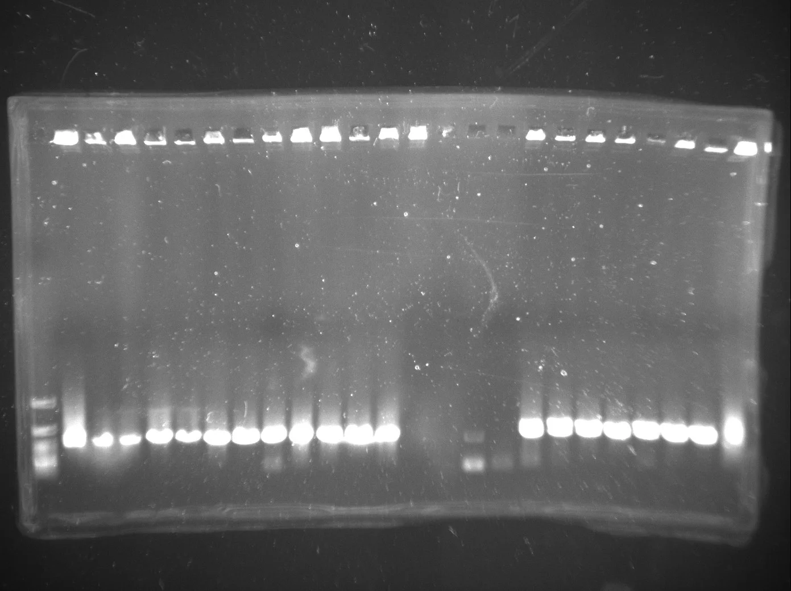
Show details The full design and build, and the three ways our own records describe this screen.
The coding sequences for the green and red light components,
ccaR, ccaSm3 and the ho1:pcyA
operon, were taken from the CcaS/CcaR characterisation of
Castillo-Hair and colleagues [1] and paired with the cargo sequences
the project needed, LEA, ACCD and BoPep4. To get those into
MoClo 2.0 as transcription units, each module was given a
standard set of regulatory parts, and every part got a custom primer
pair carrying type IIS sites: BbsI and BpiI for Level 0
entry, BsaI for Level 1, each flanked by the standard overhangs.
That hierarchy is the one the build kept, even after the kit under it
was swapped.
The mixtures were transformed into E. coli DH5α and plated on selective media, screened by colony PCR and read on agarose for insert size. Colonies with a band near an expected size were marked for miniprep and a confirming digest. Colony PCR and restriction digest both came back with high background: empty vectors and off-target bands that could not be told apart from an assembly failure or a PCR artefact.
The other half of the fix came from outside the team: a professor connected to the original paper supplied the SubtiToolKit [4]. That was luck rather than planning, and it is recorded here as luck.
Cycle 2 · Chloe · 11 June 2026 Named failure
With BsaI-only primers, a failed assembly and a PCR artefact still look the same on the gel
- Result
- Colonies came up, and gave inconsistent or unconfirmed screens.
- Changed next
- Verify the donor before assembling with it.
Design
Following the lessons learned in the DBTL 1 cycle regarding insufficient expression as shown in the gel electrophoresis results from the Pveg-RBS0 promoter-RBS combination, we redesigned the backbone of our PCB production module. Because of the problems with unverified PCR products identified in DBTL cycle 1, we realized that we must add an intermediate cloning step to isolate and sequence verify our Level 0 entry parts first.
For our Level 1 vector, we utilized
pSTK-1A-sfGFPfrom the SubtiToolKit (STK) library [4], as well aspSTK-1B-sfGFP,pSTK-1C-sfGFPandpSTK-1D-sfGFPfor our PCB, CcaS and CcaR modules, respectively. We initially utilized the MoClo 2.0 standard in our first DBTL cycle, but we realized the resulting quality was quite poor as transformation didn’t reveal any colonies, and the Golden Gate assembly efficiency was low. As a result, we switched to the SubtiToolKit, a bioengineering kit for Bacillus subtilis.To convert this coding sequence from our original MoClo design into an STK-compatible Level 0 part, we designed a forward primer (Ho1 F) and a reverse primer (pcyA R) to PCR-amplify the entire Ho1:pcyA operon as a single amplicon directly from our existing MoClo construct. We designed a forward primer (ccaSm3 F) and a reverse primer (ccaSm3 R) to PCR-amplify the full ccaSm3 coding sequence; we created a forward primer (CcaR F) and reverse primer (CcaR R). We designed a forward primer and reverse primer for each CDS with the flank of the STK 4 bp overlap sequence and BsaI restriction enzyme recognition site built on the same STK system established in Module 1 and Module 2, with gene specific annealing regions at the 3′ ends; and we designed the according forward and/or reverse primer for each output module CDS (csn:ACCD, csn:LEA) following the same modular tail architecture as for other parts from MoClo.
Build
We executed the Level 1 Golden Gate assembly following the SubtiToolKit workflow. The verified
pGEM-Teasy-Ho1:pcyALevel 0 plasmid, along with STK library parts as well as MoClo 2.0 converted STK parts, were assembled together and inserted into the accordingpSTK-sfGFPvector. We utilized the type IIS restriction enzyme BsaI to digest all Level 1 fragments, followed by ligation with T4 DNA ligase. The resulting Golden Gate assembly reaction mix was transformed into E. coli DH5α competent cells and selected on ampicillin and chloramphenicol media based on the insert vector. Positive colonies were picked, screened and verified clones were extracted via miniprep. Then, either plasmid or liquid culture was sent for sequencing to confirm the successfulness of the independent modules in our optogenetic system.Test
Colonies appeared and the screens were inconsistent.
Learn
With a raw PCR product as the donor, a wrong band can be a failed assembly or an artefact of the amplification. The next three cycles are all attempts to fix that one problem.
| Primer | Sequence (5′→3′) |
|---|---|
| Ho1 F (forward) | ATA TAT GAA GAC ATC TGA GGT CTC ATA TGT CAG TAA ATT TAG CAT CA |
| pcyA R (reverse) | ATA TAT GAA GAC ATG AGG GGT CTC ATG TCT TAC TGG ATG ACA TCA AA |
| ccaSm3 F (forward) | ATA TAT GAA GAC ATC TGA GGT CTC ATA TGG GAA AAT TTT TAA TTC CAA TT |
| ccaSm3 R (reverse) | ATA TAT GAA GAC ATG AGG GGT CTC ATG TCT TAA GCT CGA GGC AAA TGG T |
| CcaR F (forward) | ATA TAT GAA GAC ATC TGA GGT CTC ATA TGA GAA TTC TTT TAG TGG AGG AT |
| CcaR R (reverse) | ATA TAT GAA GAC ATG AGG GGT CTC ATG TCC TAG TTT TTC CCT TGG CAC AA |
| Part | Primer | Level 0 overhang (BpiI) | Level 1 overhang (BsaI) | Sequence |
|---|---|---|---|---|
| Csn | Csn F | CTGA | TATG | ATA TAT GAA GAC ATC TGA GGT CTC ATA TGA AAA TCA GTA TGC AAA AAG CA |
| ACCD | ACCD R | GAGG | TGTC | ATA TAT GAA GAC ATG AGG GGT CTC ATG TCT TAA TGA TGA TGA TGA TGA T |
| AmilCP | AmilCP R | GAGG | TGTC | ATA TAT GAA GAC ATG AGG GGT CTC ATG TCT TAA GCA ACA ACC GGC TTT C |
| Lea | Lea R | GAGG | TGTC | ATA TAT GAA GAC ATG AGG GGT CTC ATG TCT TAA TGA TGA TGA TGA TGA T |
| EEBD | EEBD F | CTGA | ACAT | ATA TAT GAA GAC ATC TGA GGT CTC AAC ATA CTT CCT AGA ATA TAT ATT A |
| PcpcG2-veg | PcpcG2-veg F | CTGA | AGAG | ATA TAT GAA GAC ATC TGA GGT CTC AAG AGA GCC CAT TGT GCT |
| PcpcG2-veg | PcpcG2-veg R | GAGG | ATGT | ATA TAT GAA GAC ATG AGG GGT CTC AAT GTC CAC CTC ACT ACA TTT ATT A |
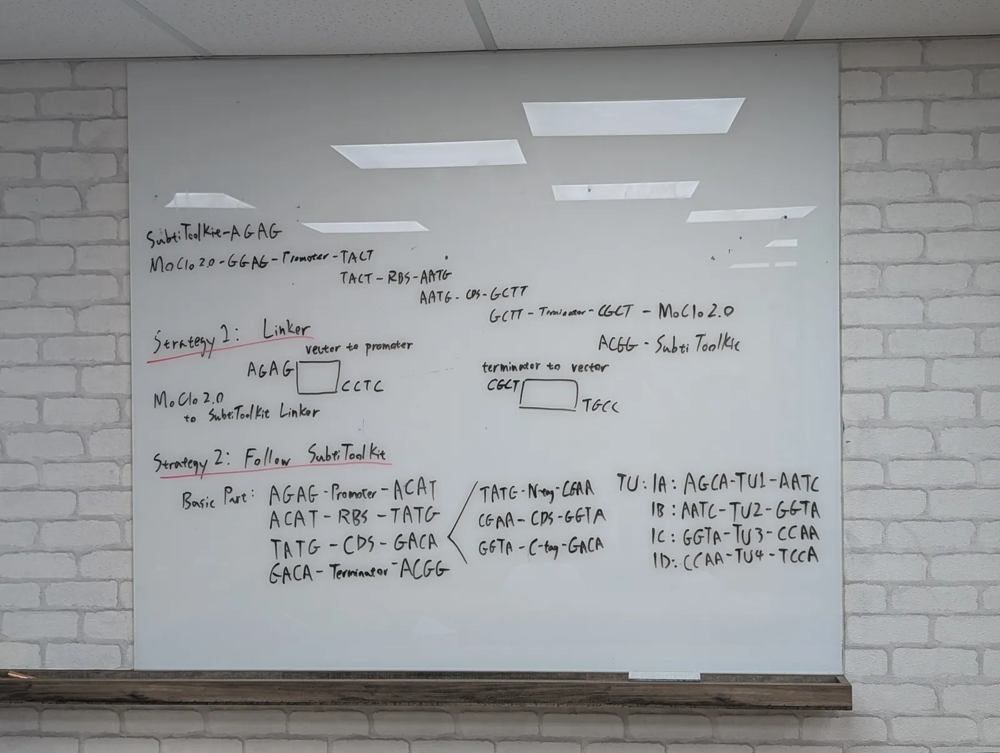
Show details The six primers that carried a MoClo part into the kit, and a lesson attributed to the wrong cycle.
The four Level 1 destination vectors came out of the kit
unchanged, one per transcription unit. What had to be made was the
parts to go in them: each coding sequence was re-amplified off the
MoClo construct with a new primer pair, so that a fragment designed
for one standard came out carrying the syntax of the other.
Ho1 F anneals on the start codon of
ho1 and pcyA R past the 3′ end of
pcyA, so the whole operon comes off as one amplicon;
ccaSm3 and ccaR were amplified the same way.
The 29 bp tail is identical on all six. Thirteen primers is the
whole set, described part by part on Parts.
| Primer | Module | Sequence, 5′ to 3′ |
|---|---|---|
| Ho1 F | 1 · PCB production | ATATAT GAAGAC ATCTGA GGTCTC ATATG TCAGTAAATTTAGCATCA |
| pcyA R | 1 · PCB production | ATATAT GAAGAC ATGAGG GGTCTC ATGTC TTACTGGATGACATCAAA |
| ccaSm3 F | 2 · light sensing | ATATAT GAAGAC ATCTGA GGTCTC ATATG GGAAAATTTTTAATTCCAATT |
| ccaSm3 R | 2 · light sensing | ATATAT GAAGAC ATGAGG GGTCTC ATGTC TTAAGCTCGAGGCAAATGGT |
| CcaR F | 3 · transcriptional output | ATATAT GAAGAC ATCTGA GGTCTC ATATG AGAATTCTTTTAGTGGAGGAT |
| CcaR R | 3 · transcriptional output | ATATAT GAAGAC ATGAGG GGTCTC ATGTC CTAGTTTTTCCCTTGGCACAA |
BsaI cut every fragment, T4 ligase closed them, and the mix went into E. coli DH5α, plated on ampicillin or chloramphenicol according to which vector the insert was going into. Colonies were picked and screened, verified clones miniprepped, and either the plasmid or the liquid culture was sent for sequencing.
Cycle 3 · Sophie C · July 2026 Closed
A pGEM-T Easy intermediate costs a day and removes the ambiguity
- Result
- Seven coding sequences cloned, screened and sequence-confirmed before any Golden Gate reaction.
- Changed next
- A marker clash nobody had checked for.
Design
Based on the results from DBTL 2, we shifted our focus toward optimizing the SubtiToolKit cloning workflow itself, rather than redesigning the genetic architecture of each module. Since the BsaI-only Level 1 entry step had introduced ambiguity in our earlier assembly, with colonies producing inconsistent or unconfirmed results, we revisited the cloning strategy at the PCR and vector-entry stage to improve reliability before moving into Level 1 Golden Gate assembly. The overall part composition for each module remained unchanged from DBTL 1 and 2; the redesign targeted the intermediate cloning steps used to generate clean, verified Level 0 parts.
Build
To improve the reliability of our Level 0 entry step, we amplified each module’s coding sequence by PCR and cloned the amplicon into a pGEM-T Easy vector [5]. pGEM-T Easy provides a direct, rapid method for cloning PCR products through direct TA cloning: the vector is supplied pre-linearized with single 3′-thymidine (T) overhangs, which are complementary to the single 3′-adenosine (A) overhangs left on PCR products by Taq and other non-proofreading polymerases. This complementarity allows the amplicon to ligate directly into the vector without any additional end-polishing, restriction digestion, or blunting step, making it a fast and efficient intermediate cloning strategy compared to attempting Golden Gate entry directly from a raw PCR product.
A plasmid backbone is also generally easier to work with and verify than a linear PCR product: pGEM-T Easy clones can be more reliably purified, screened by colony PCR, and sequence-confirmed before being subjected to the BpiI/BsaI digestion-ligation reactions required for Level 1 assembly, reducing the risk of carrying an uncharacterized PCR error into downstream Golden Gate steps. Positive pGEM-T Easy clones carrying each construct’s coding sequence were identified by colony PCR and sent for sequencing to confirm the insert prior to use in subsequent Golden Gate reactions.
Test
Colonies from the pGEM-T Easy transformations were screened by colony PCR using primers, and PCR products were run on an agarose gel alongside a DNA ladder to assess assembly success. A correct colony PCR band is one that runs at the expected size, calculated as the length between the T7 promoter and the SP6 promoter amplified by the screening primers; this confirms that a DNA fragment of the correct length was successfully ligated into the vector at the expected position. Colonies producing a single, clean band at this expected size were considered positive candidates for the correct insert. In contrast, colonies producing no band, a band at the size of the empty vector (i.e. no insert, indicating self-ligation of the pGEM-T Easy vector), or bands at incorrect or unexpected sizes were classified as negative and excluded from further analysis, since these patterns indicate either an empty vector or a truncated or mis-primed amplicon rather than the intended insert.
Colonies showing the expected band size were selected and sent for sequencing to confirm that the cloned insert matched the intended coding sequence with no mutations, insertions, or deletions, prior to proceeding with Golden Gate digestion into the STK system.
Learn
The pGEM-T Easy TA cloning step proved to be a fast and reliable way to generate verified Level 0 entry material before doing Golden Gate assembly. Because colony PCR alone can only confirm that an insert of approximately the correct size is present, and cannot rule out point mutations or small indels introduced during PCR amplification, we relied on sequencing rather than enzyme digestion to confirm the fidelity of each cloned insert; we did not perform additional restriction digest verification at this stage, since correct band size on colony PCR combined with full-length sequencing was sufficient to confirm both insert identity and sequence accuracy before proceeding to BsaI-based STK assembly.
This step did add an extra day to our workflow compared to attempting direct entry from the PCR product, since colonies had to be picked, screened, and miniprepped before sequencing. However, it reduced the ambiguity we had encountered in DBTL 2, where using PCR products directly made it harder to distinguish true assembly failures from PCR artifacts.
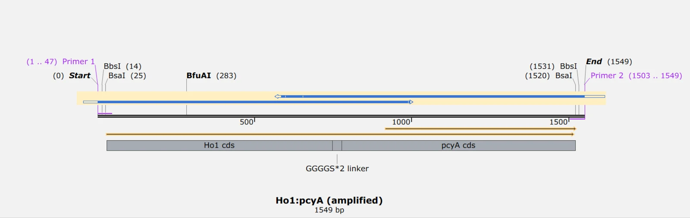
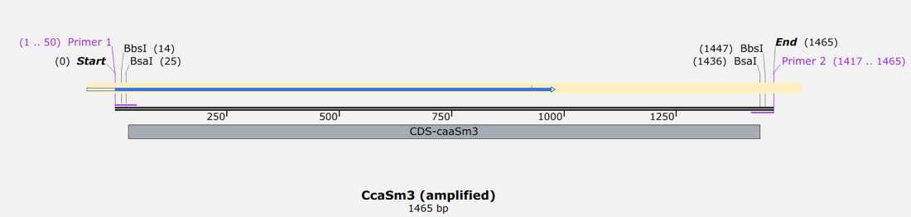
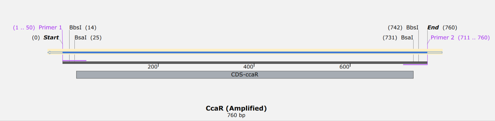
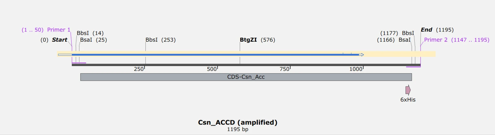
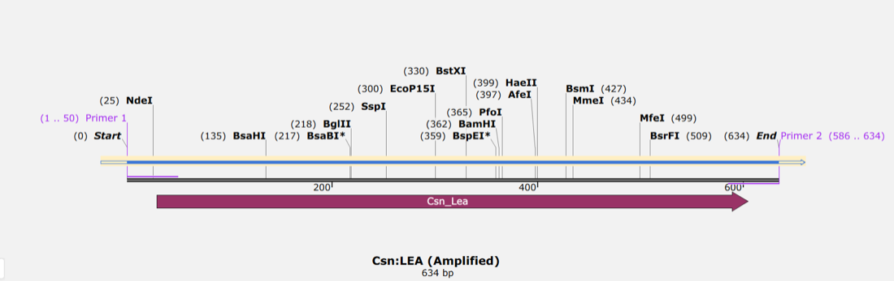
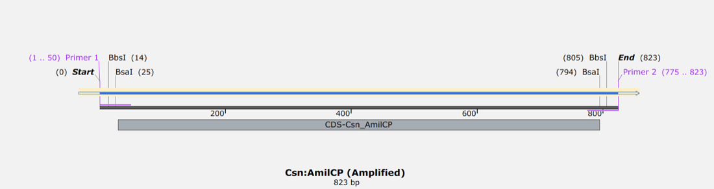
The six amplicons that went into pGEM-T Easy, as designed. Each carries the same tail at both ends: a spacer, a BpiI site that sets the Level 0 overhang, and a BsaI site that sets the Level 1 position. The sequencing reads that confirmed them are what let cycle 3 close.
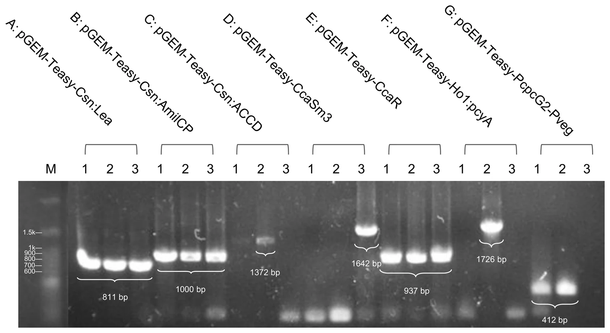
Show details The seven sets and their expected sizes, two more screens, and what the sequencing added.
A plasmid is also easier to work with than a linear fragment. A pGEM-T Easy clone can be purified reliably, screened by colony PCR and sequence-confirmed before it ever meets the BpiI and BsaI digestion-ligation reactions, which keeps an uncharacterised PCR error from propagating into every downstream assembly. Three outcomes were scored negative and excluded: no band at all, a band at the size of the empty vector, meaning the vector self-ligated, and a band at any other size, meaning a truncated or mis-primed amplicon.
| Set | Insert | Expected |
|---|---|---|
| A | pGEM-Teasy-Csn:Lea | 811 bp |
| B | pGEM-Teasy-Csn:AmilCP | 1,000 bp |
| C | pGEM-Teasy-Csn:Accd | 1,372 bp |
| D | pGEM-Teasy-CcaSm3 | 1,642 bp |
| E | pGEM-Teasy-CcaR | 937 bp |
| F | pGEM-Teasy-Ho1:pcyA | 1,726 bp |
| G | pGEM-Teasy-PcpcG2-veg | 412 bp |
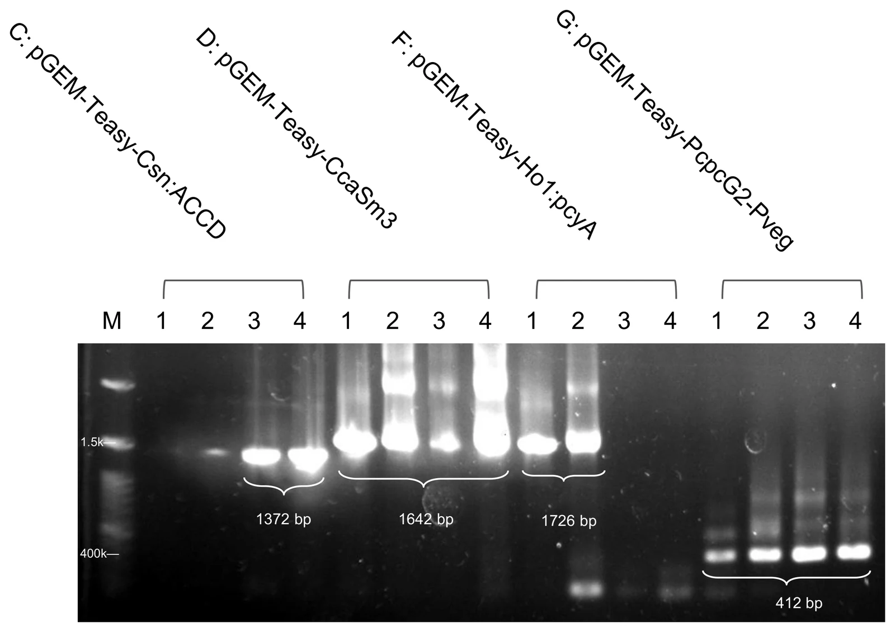
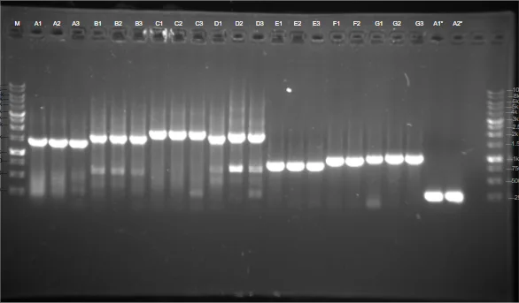
TA cloning proved a fast and reliable way to generate verified Level 0 material. Colony PCR alone can only say that an insert of about the right length is present; it cannot rule out a point mutation or a small indel introduced during amplification. Fidelity was confirmed by sequencing, and no restriction digest was run at this stage, because correct band size plus full-length sequencing already answers both questions the digest would have answered.
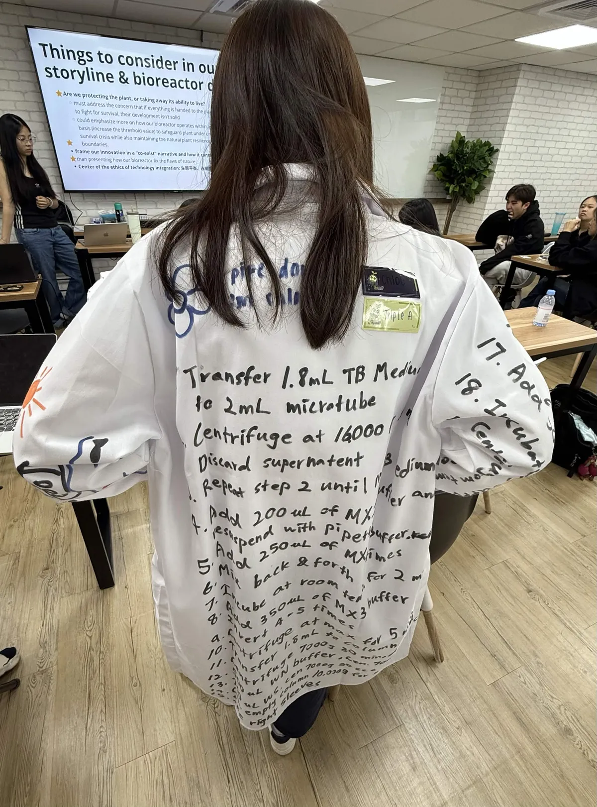
Cycle 4 · Sophie C · 14 August 2026 Named failure
Both pGEM-T Easy and every Level 1 destination vector carry ampicillin
- Result
- The intermediate that fixed cycle 2 could not be selected against at Level 1. Rebuilt on the kit’s own entry vector, all three Level 0 screens came back clean.
- Changed next
- Repeated regulatory parts across the modules became a stated recombination worry.
Design
After DBTL 3, we further optimized our SubtiToolKit cloning strategy (v2) in response to a compatibility issue identified with the pGEM-T Easy intermediate cloning step: the pGEM-T Easy vector uses the same antibiotic resistance gene (ampicillin) as our Level 1 destination vectors (1A, 1B, 1C, 1D), which complicated downstream selection and increased the risk of background contamination from carryover vector during Golden Gate assembly. To resolve this, we redesigned our cloning approach to construct each module’s coding sequence directly using STK Level 0 primers, skipping the pGEM-T Easy intermediate altogether. This step was only relevant to the CDS not cloned into pGEM-T Easy, as the ones from DBTL 3 were still usable in Level 1 Golden Gate assembly.
Build
We amplified the coding sequence directly with primers carrying the STK Level 0 (BpiI) and Level 1 (BsaI) tail architecture, as described for Modules 1 to 4, and cloned the amplicon directly into the
pSTK-0CCDS entry vector rather than through pGEM-T Easy. This removed the antibiotic resistance conflict, sincepSTK-0and our Level 1 destination vectors use distinguishable selection markers (chloramphenicol versus ampicillin), allowing a more obvious difference between correctly assembled Level 1 clones and the vector.Test
Three Level 0 screens on 14 August, all clean at their expected sizes, and three clones from each went to liquid culture. The students’ document leaves this step to the gels themselves.
Learn
Although this approach resolved the antibiotic resistance conflict, it raised a new concern regarding potential recombination events in Bacillus subtilis. Because several of our modules share repeated regulatory sequences (e.g. Pveg, RBS0, B0015) across multiple constructs, we became concerned that homologous recombination between repeated elements, once all four modules were combined in B. subtilis, could destabilize parts of the assembled optogenetic circuit, potentially weakening the CcaS/CcaR signals. This concern motivated us to reconsider the repeated part usage across our modules going into the next design cycle.
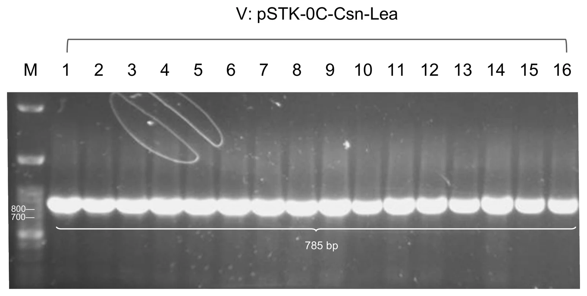
pSTK-0C-Csn-Lea, S1 to S24, screened with
Csn F and STK-seq-rv at 785 bp. S2, S10 and S16 went forward.
Show details The two BoPep4 screens from the same day, and the redesign this cycle handed to cycle 6.
Only the coding sequences that had not already been cloned in cycle 3 were affected; the ones already in pGEM-T Easy were still usable at Level 1.
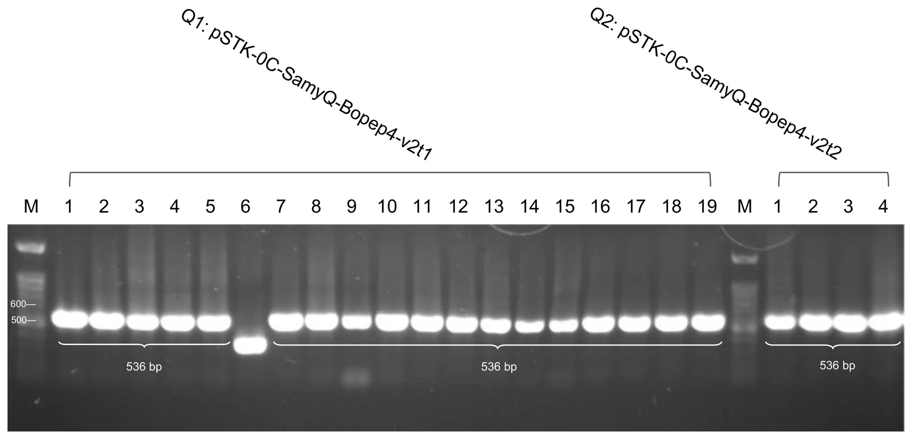
pSTK-0C-SamyQ-Bopep4-v2t1, Q1(1) to
Q1(19), and v2t2, Q2(1) to Q2(4), both at 536 bp
with STK-seq-fw and STK-seq-rv. Q1-4, Q1-10 and Q1-19 went to
liquid culture.
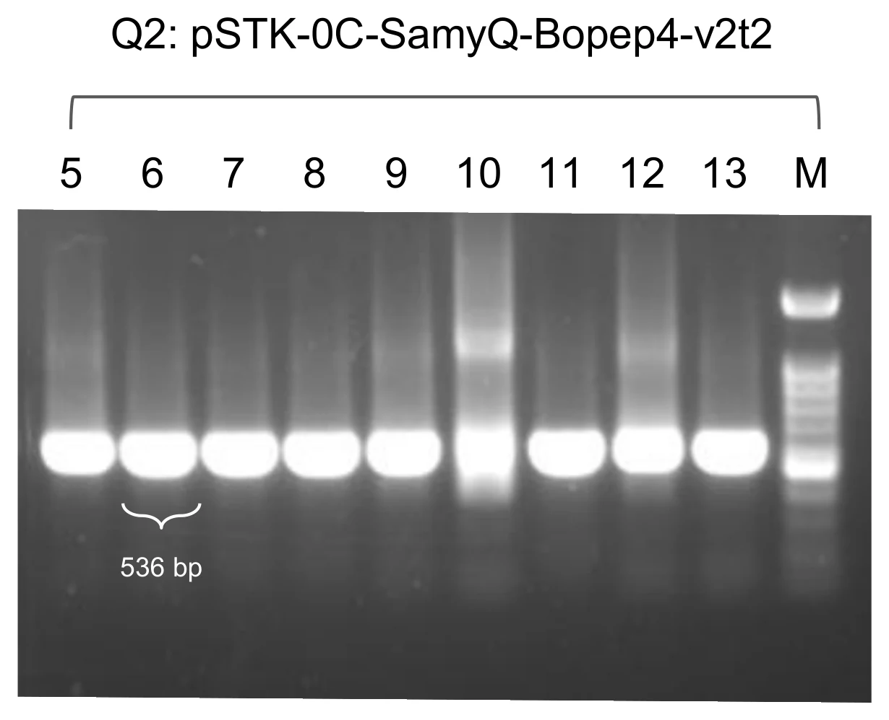
Once all four modules sat in one cell, long stretches of identical sequence could give recombination something to act on, and the CcaS/CcaR signal path is exactly what would be damaged. The redesign written at the end of this cycle is one line: diversify the promoter, ribosome binding site and terminator across the modules so that no two of them share a long identical stretch. That is what cycle 6 was run on.
Cycle 5 · Chloe · July to August 2026 Closed
Every light-gated cargo was also built constitutively, so a negative result has one explanation fewer
- Result
- Five constitutive cargoes built and screened, and the ACCD strain carried into the reactor.
- Changed next
- Building five modules on the same promoter, ribosome binding site and terminator is what made the recombination worry concrete.
Design
To construct our circuit’s output module, we designed a library of candidate constructs capable of expressing and secreting functional biotic and abiotic plant protectants. Because the optimal protectant–secretion signal combination could not be determined prior, we adopted a parallel design strategy built on a unified expression format: the constitutive promoter Pveg, a composite ribosome binding site (EEBD-RBS0), a secretion signal peptide (SamyQ or Csn) fused upstream of the protectant coding sequence, a histag to view protein expression, and the B0015 terminator. All constructs were designed for assembly directly into the
pSTK-EXP1-sfGFPdestination shuttle vector, enabling immediate expression in E. coli as well as downstream transfer into Bacillus subtilis. To integrate parts that weren’t from the SubtiToolKit library (Csn, ACCD, Lea, BoPep4), we designed custom primers following standard STK architecture: a 5′ spacer, a BpiI site, a BsaI site, and a gene specific annealing sequence.Build
We physically assembled all candidate Level 0 parts using BpiI-mediated Golden Gate cloning into
pSTK-0-sfGFP, replacing the sfGFP dropout cassette. The resulting Level 0 entry plasmids were transformed into chemically competent E. coli DH5α, isolated, and sequence-verified. In the second assembly step, the verified Level 0 protectant cassettes were combined with pSTK parts (Pveg, EEBD-RBS0, and B0015) and thepSTK-EXP1-sfGFPdestination shuttle vector in a BsaI Golden Gate reaction. Ligated expression vectors were transformed into E. coli DH5α, screen-confirmed by miniprep digestion, and prepared for downstream expression and functional testing.Test
Transformant colonies across all five output candidates (BoPep4, Csn:Lea, Csn:ACCD, SamyQ:LEA, SamyQ:ACCD) were initially screened via colony PCR and analyzed via agarose gel electrophoresis to confirm complete construct insertion into
pSTK-EXP1-sfGFP. Liquid was then cultured and sent for sequencing to confirm the existence of the correct inserts. Positive clones producing single, clean bands at expected amplicon sizes were then electroporated into Bacillus subtilis. Transformant colonies were screened by colony PCR to confirm the presence of the full-length output expression cassettes. Electrophoresis of PCR products on agarose gels yielded sharp, distinct bands at the expected sizes, matching our prior sequence-verification data in B. subtilis 168. Verified single colonies were inoculated into liquid media, which were then scaled up for downstream functional testing in our bioreactor.ACCD expression of the constitutive circuit was measured over the span of 44 hours. Liquid was then extracted every two hours from the shell site and lumen site of the bioreactor for a western blot in order to optimize and quantify protein expression.
Learn
Testing of our ACCD in our bioreactor provided critical insight into both expression levels and circuit stability. Using the Csn:ACCD construct allowed us to directly monitor protectant production and evaluate secretion efficiency; however, constitutive runs through our bioreactor and a western blot revealed that while ACCD expression was not clearly detectable, the overall protein yield was relatively low and did not reach optimal physiological levels. This highlighted the need for future optimization of expression elements (such as promoter strength or codon optimization) to boost output efficiency for demanding protectants.
Furthermore, from an assembly perspective, although this cycle is mostly focused on the constitutive expression of ACCD, we were also working on our inducible system at the same time. Constructing multiple modules containing identical regulatory elements (Pveg, EEBD-RBS0, and B0015) highlighted an important concern. Reusing identical promoter and terminator sequences across all four modules of our full circuit created substantial sequence redundancy. When introduced into Bacillus subtilis, long stretches of sequence identity carry a high risk of triggering homologous recombination, which could destabilize or excise parts of our optogenetic circuit.
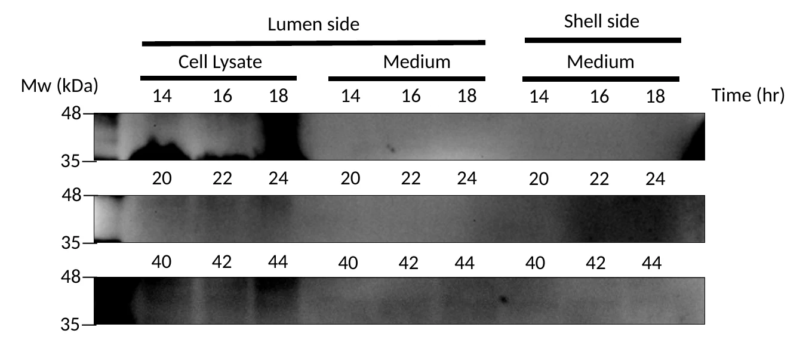
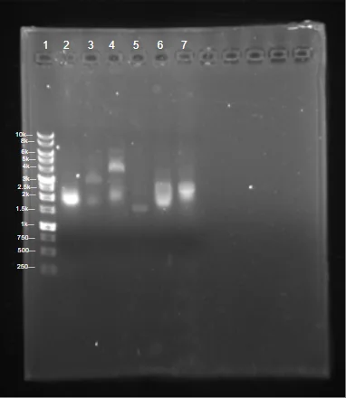
Show details The five-cargo library, the LEA arm that failed its digest, and what a colony PCR in B. subtilis can and cannot say.
Every cargo built behind PcpcG2-veg in module 4 was
also built this way, which is the second reason the series exists. All
of them went into pSTK-EXP1-sfGFP, so the same plasmid
could be screened for expression in E. coli and then
carried into B. subtilis unchanged. Four parts the library
needed were not in the kit at all, Csn, ACCD, LEA and BoPep4, and each
got a custom primer on the standard four-element tail.
All five output candidates were screened the same way. Clones giving a single clean band at the expected size were electroporated into B. subtilis and screened by colony PCR again, which returned sharp bands at the expected sizes in the new host. Those single colonies went into liquid culture and then up to reactor scale. The protein this strain makes, and where it ends up, is the Results.

The five constitutive constructs
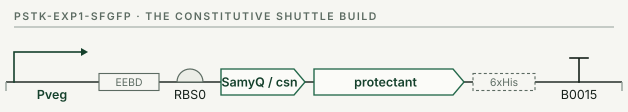
| # | Architecture | Purpose | Where it got to |
|---|---|---|---|
| 1 | Pveg → EEBD → RBS0 → SamyQ-TAT-HA-AmilCP → B0015 | Visible reporter | Built. |
| 2 | Pveg → EEBD → RBS0 → Csn:ACCD → B0015 | The cargo carried forward | J9 sequenced clean, 27 July. |
| 3 | Pveg → EEBD → RBS0 → spacer → GanA-Gala-6×His → B0015 | Galactosidase arm | All twelve L lanes failed, 30 July. |
| 4 | Pveg → EEBD → RBS0 → Csn:Lea → B0015 | LEA protein | Screened at 1,372 bp, 25 July. |
| 5 | Pveg → EEBD → RBS0 → SamyQ-Bopep4-v2t1 → B0015 | The designed peptide | Level 0 at 536 bp, 14 August. |
Cycle 6 · Sophie C · 30 July to 19 September 2026 Closed
Module 1’s repeats came out, and then the recombination premise did not survive
- Result
- The rebuilt module sequenced positive on three clones, and three Level 2 clones were checked at all three internal junctions on 19 September.
- Changed next
- The light plate run that would test the switch. It has not happened.
Design
To address the recombination risk identified in DBTL 4, we developed a third version of our SubtiToolKit design (v3) aimed at reducing sequence redundancy across the four modules of our optogenetic circuit. Rather than reusing identical regulatory parts (promoter, RBS, terminator) across multiple modules, we diversified these elements in Module 1 to minimize the length and number of repeated sequences that could serve as substrates for homologous recombination in B. subtilis.
Build
We modified the affected constructs by substituting the promoter, RBS, and/or terminator with alternative STK parts for Module 1, distinct from those used elsewhere in the circuit, while preserving its coding sequence. This was intended to maintain equivalent transcriptional and translational output while breaking up long stretches of sequence identity shared between modules.
Test
Eleven of twelve colonies carried the expected 1,833 bp band on 30 July; A1, A2 and A3 sequenced positive the next day. Every colony of the galactosidase arm on the same gel failed. The students’ document leaves this step to the gels themselves.
Learn
This last DBTL cycle of our optogenetic light circuit allowed us to finally move on to Level 2 assembly, followed by LPA testing to verify the production of protectants by light signals.
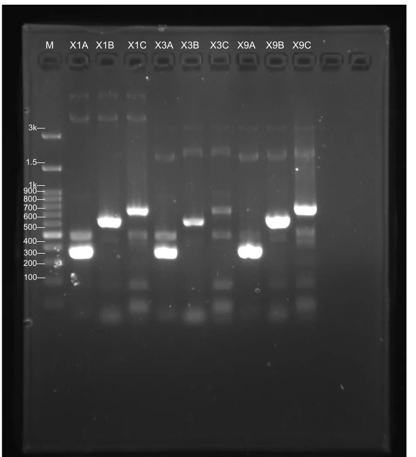
Show details What was varied and what was not, the rebuilt module, the two Level 2 devices, and three contested records.
The team’s own cloning-progress table is the clearest statement of what was varied, with the three regulatory slots pulled apart. Only the promoter, the ribosome binding site and the terminator ever moved; no coding sequence changed in this cycle.
| Module | Round | Promoter | RBS | Terminator | What it turned on |
|---|---|---|---|---|---|
| 1 · PCB production | first | Pveg | RBS0 | B0015 | No successful clone on the first way of cloning it. |
| second | PtagC | RBS | L3S2P21 | The second round gave a successful clone. Promoter strength stays pending because the first version was never obtained. | |
| 2 · light sensing | first | PlepA | RBS0 | B0015 | Promoter strength. Both versions were built, and both exist. |
| second | PliaG | RBS0 | B0015 | PliaG is the one sequencing confirmed first. | |
| 3 · transcriptional output | only | Pveg | RBS0 | B0015 | No change at any point. |
| 4 · output | only | PcpcG2 | RBS0 | cold D, then back to B0015 | The terminator swap was made against recombination and then undone. |
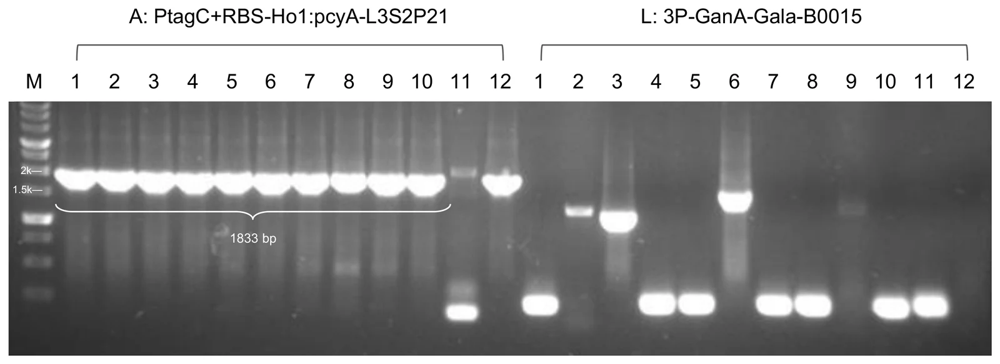

Module 4: Original terminator cold D (Failure) to B0015. Because Professor Huang thinks recombination in Bacillus is not the issue, we changed our terminator back to our original plan, B0015.
So the cold double terminator survives as an artefact of a redesign we undid. The other half of the motive stands on its own: module 1 sequenced clean on Pveg and RBS0 and gave no expression signal, and the rebuild is the part of this cycle we kept.
Level 2, and a stoichiometry change
With module 1 rebuilt, the four modules went into Level 2. Three consecutive Golden Gate rounds returned nothing with no design change between them. On 28 August the insert-to-vector ratio was swept at 1:5 and 1:7 and both returned positives; on 1 September two clones were confirmed across three internal junctions at once. Module 2 was built on two promoters and both survived, so the Level 2 assembly was run twice: ACDI carries the PlepA photoreceptor and ABDI the PliaG one. Until an induction curve exists there is no way to choose between them, so both were carried.
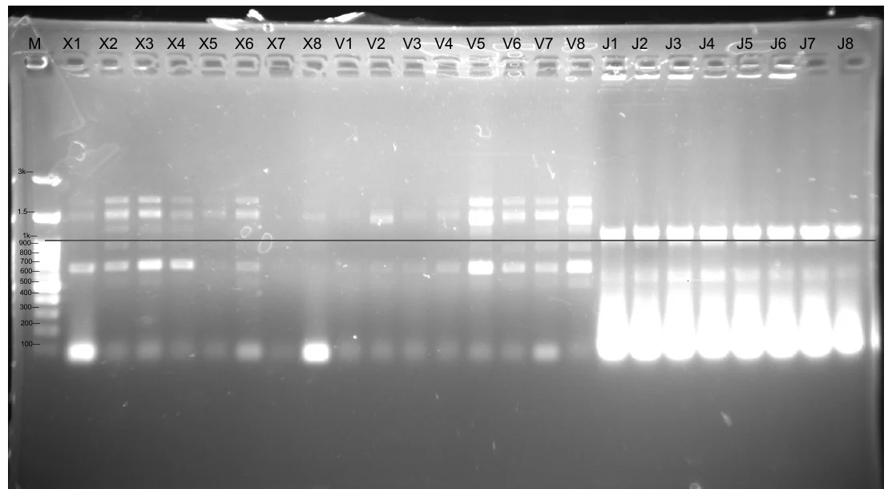
ABDI is the weaker of the two: clone V7 has been checked one junction at a time on separate gels and never all three at once. No Level 2 construct has been sequenced end to end, and the build record’s Level 2 sequencing cell is empty for both devices.
Bioreactor
A hollow-fibre loop that keeps engineered cells on one side of a membrane and lets the protectant across. Five cycles, from a loop that leaked at the pump head to a live culture of B. subtilis WB800 held for fifty-three hours. The reactor record sorts the same work into four tracks and names what is still only outlined: four cycles on membrane pressure and flow, none of them run, and two more integration cycles after the one below.
Cycle 1 · Prototype I · 6 June 2026 Named failure
The loop reached its flow rate and then leaked at the pump head, and the culture barely grew
- Result
- 94 mL/min held, the run stopped early on a leak, and 2 mL of shell-side medium plated on LB grew nothing.
- Changed next
- Biocompatible tubing, a magnetic stirrer, and the sampling port moved to the reservoir outlet.
Design
Initially, the objective of our design was to establish a functional continuous flow system utilizing a PES hollow fiber membrane. This preliminary build provided initial insights into structural limitations and potential hardware optimizations. The design of our Bioreactor comprises a PES Hollow Fiber Membrane, medium reservoir, Peristaltic pump, and luer valve, offering a simple, continuous flow-through mechanism.
Build
Within this first cycle, we utilized a PES hollow fiber protein membrane (lumen volume: ~200 mL) connected to a 500 mL LB medium reservoir containing 300 mL of LB medium, inoculated with 20 mL of a multi-overnight B. subtilis liquid culture.
Test
Within early phase testing, the peristaltic pump achieved the target flow rate of 94 mL/min; however, the trial was prematurely terminated due to localized medium leakage within the peristaltic pump. We then evaluated microbial viability, yielding final OD600 readings of 0.304 (in-tube) and 0.48 (medium reservoir).
Learn
The divergent OD600 values between the tube and reservoir indicated poor microbial viability and pointed to two key hardware limitations for the next DBTL cycle. Exhibiting these factors, we hypothesize that the lack of active mixing led to nutrient stratification and cell sedimentation within the reservoir, limiting growth.
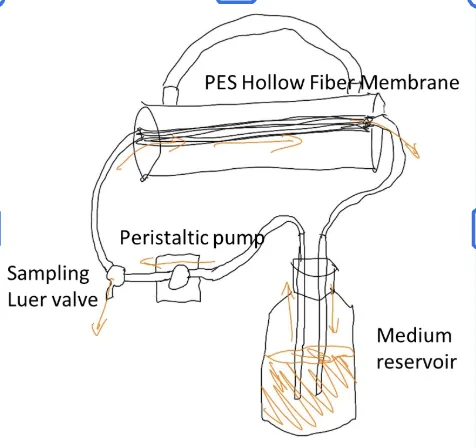
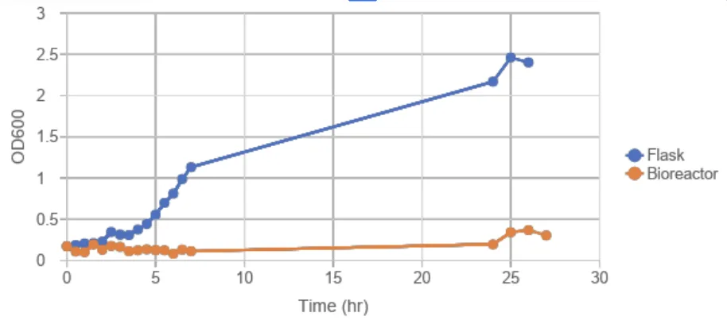
Show details The containment plate, and the three changes this cycle asked for.
To confirm the microbial presence and viability, 2 mL of the medium was extracted from the Shell side of the Hollow fiber membrane and was plated on LB agar to examine colony formation. From this, we observed the absence of colony formation, providing functional proof that our bioreactor is bio-safe for public agricultural usage.
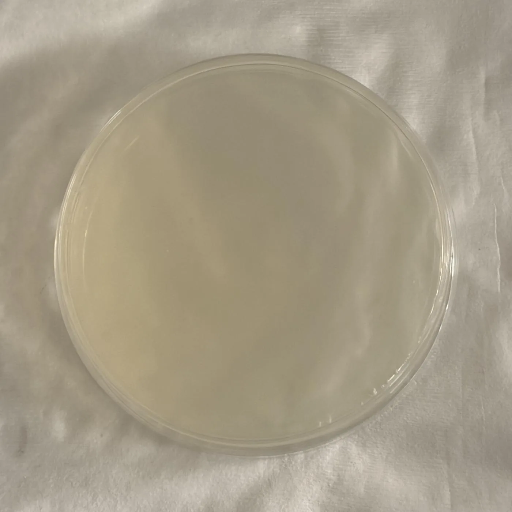
Furthermore, to overcome the observed lack of microbial growth, we plan to incorporate an active magnetic stirring mechanism, inspired by the Biology laboratory Hot plate magnetic stirrer, to prevent sedimentation and ensure a homogeneous nutrient distribution. In addition, to improve the data collection accuracy and minimize contamination risks, we plan to relocate our initial sampling ports directly to the medium reservoir’s outlet within our next DBTL cycle.
In order to address the mechanical leakage, we identified the need for biocompatible tubing (BPT) to ensure higher durability and more stable sealing between transition points of the pump.
What that plate can carry is narrower than the sentence above it. No replicate count was stated for it, and its incubation time and temperature were not recorded. The reactor record now counts two platings in all, the second run beside a lumen-side plate that grew, which is what makes an empty plate mean anything; it states no replicate count either. The barrier is also the only containment stage in the loop, and the 0.2 µm pore that holds cells back passes vesicles and cell debris.
Cycle 2 · Prototype II · 14 June 2026 Closed
Stirring, 37 °C and a sampling port at the reservoir gave the first complete growth curve
- Result
- The reactor plateaued at OD600 0.8 to 0.9 after about two hours, against the flask’s 0.6 to 0.8 after four and a half.
- Changed next
- Run it again at 22 °C, on higher-durability BPT tubing.
Design
Improving on the previous design, a 200rpm magnetic stir was added to the medium reservoir to prevent sedimentation and ensure a homogeneous nutrient distribution. In addition, the sampling sector was placed closer to the medium reservoir to acquire a more accurate measurement as the reservoir holds much more relative volume compared to the hollow fiber membrane, giving us a more averaged prediction of the total OD of the entire bioreactor module.
Build
The same loop with the 200 rpm magnetic stirrer under the reservoir and the sampler moved to its outlet; the drawing below is the team’s own illustration of the prototype.
Test
As before, the peristaltic pump maintained the target flow rate of 94 mL/min for the entirety of testing. However, instead of experimenting with room temperature, the bioreactor(experiment) and flask(control) were maintained at 37 degrees Celsius. In contrast to our last attempt, this time the experiment ran successfully, helping us secure the full growth curve of our bacteria, with the bioreactor reaching the plateau phase (OD600 ~0.8-0.9) after 2 hours, and the flask reaching the plateau phase (OD600 ~0.6-0.8) after 4.5 hours.
Learn
The successful generation of the OD600 growth curve confirmed and justified that adding the continuous magnetic stirring mechanism is crucial to preventing sedimentation and maintaining optimal system efficiency.
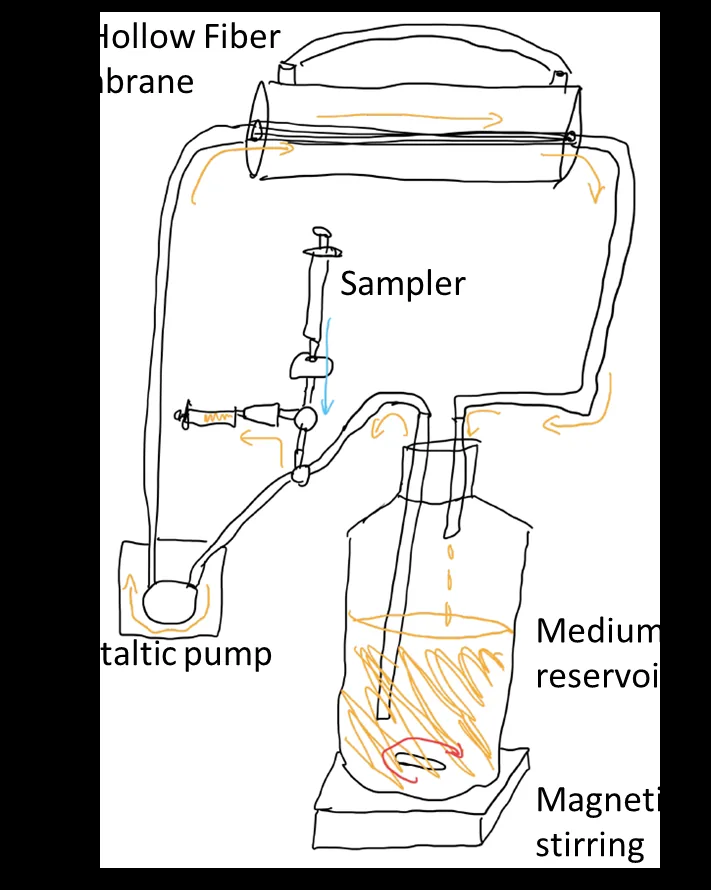
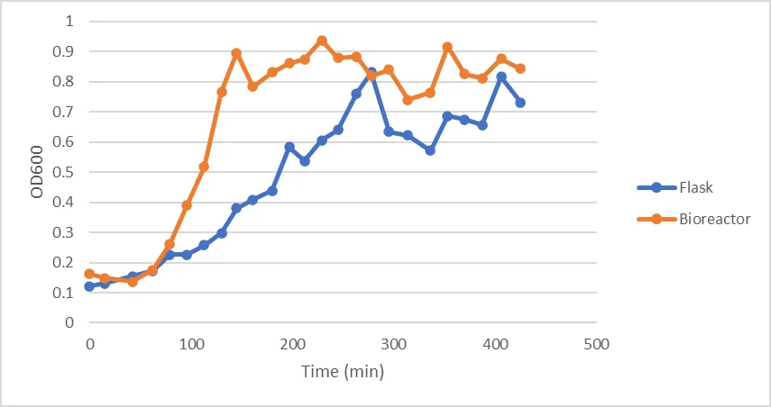
Show details What the team wrote about what comes next, and two things the cycle cannot say.
Moving forward, the next DBTL cycle will evaluate the system’s performance and growth kinetics at a reduced temperature of 22°C. Moreover, to ensure the long-term reliability of our Bioreactor and prevent tube degradation observed in earlier trials, upgrading to higher-durability BPT tubing is necessary for the next round of testing.
Cycle 3 · 22 °C with BPT tubing · July 2026 Closed
New tubing, the growth chamber temperature, and the photometer reading the loop instead of a pipette
- Result
- Steady growth at 22 °C through the photometer, with the leak and degradation problems gone.
- Changed next
- Instrument the loop: pressure, flow, and a valve that holds when the power is cut.
Design
The tubing was upgraded to biocompatible BPT tubing. The system was evaluated at a reduced operating temperature of 22 °C, placing our experimental setup within our plant growth incubator. Furthermore, this test would be utilizing our self-made photometer design.
Build
The loop went into the incubator with the printed photometer tower plumbed into the return leg, downstream of the pump, where a longer plumb gives the pump’s sawtooth room to smooth out.
Test
The run itself is the 400-hour photometer record in the photometer track.
Learn
Our B. sub is able to grow steadily while passing through our photometer, with our new tubing, at 22 degrees. It was dropped into the reservoir from a large height, creating slight bubbling that helped dissolve oxygen passively. The newly used BPT tubing resolved all leak and degradation issues.
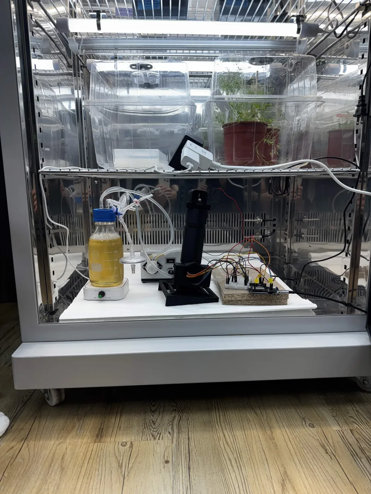
Show details One limitation the team wrote down, and one thing this loop did not have.
A limitation is that it took 200 hours to plateau due to a large drop that could’ve been caused by contamination.
The same drafts also record that this growth run used a simplified circulation loop with no hollow-fibre module in it, at about 23 °C, and the reactor record goes no further than putting the run “on the bioreactor loop” in the document’s own words. The longest recording it counts with the membrane module actually fitted is the fifty-three hours of cycle 5. So this cycle proves the tubing, the temperature and the in-line measurement, and not the membrane: a 22 °C growth curve on the membrane loop is still an open parameter, and the only growth curve the membrane loop has is at 37 °C. The drop it mentions is the unexplained dip discussed in the photometer track.
Cycle 4 · Prototypes III to VII · 4 July to 23 August 2026 Partly failed
Scale settled by arithmetic, transmembrane pressure on a screen, and autonomy blocked on sterility rather than electronics
- Result
- Pressure, flow and a servo pinch valve went on. The magnetic pump and its reservoir were rejected, and neither probe could be got into a sealed vessel cleanly.
- Changed next
- Run every subsystem at once, on cells.
Design
Two questions settled before anything reached the bench. Scale: a hollow-fibre membrane has to run at a wall shear rate of 2,000 to 6,000 s−1, which fixes the cross-flow once the geometry is chosen. And the pinch valve actuator, scored against four criteria agreed before any option was looked at.
Build
A pressure transducer on the retentate side on 12 July, a servo replacing the stepper valve, the full rig assembled over four days in July, then a magnetic pump, a cooling reservoir and a cap bored for dissolved-oxygen and pH probes in August.
Test
Transmembrane pressure was on a screen the same evening the sensor went on, with a heavy pump sawtooth on the trace. The magnetic pump topped out below 200 mL/min against a recommended 263 mL/min and could not lift liquid out of the serum bottle.
Learn
Autonomy is blocked on sterility, not on electronics. Neither probe body survives autoclaving and the reservoir closes with a rubber septum, and no amount of firmware addresses that.
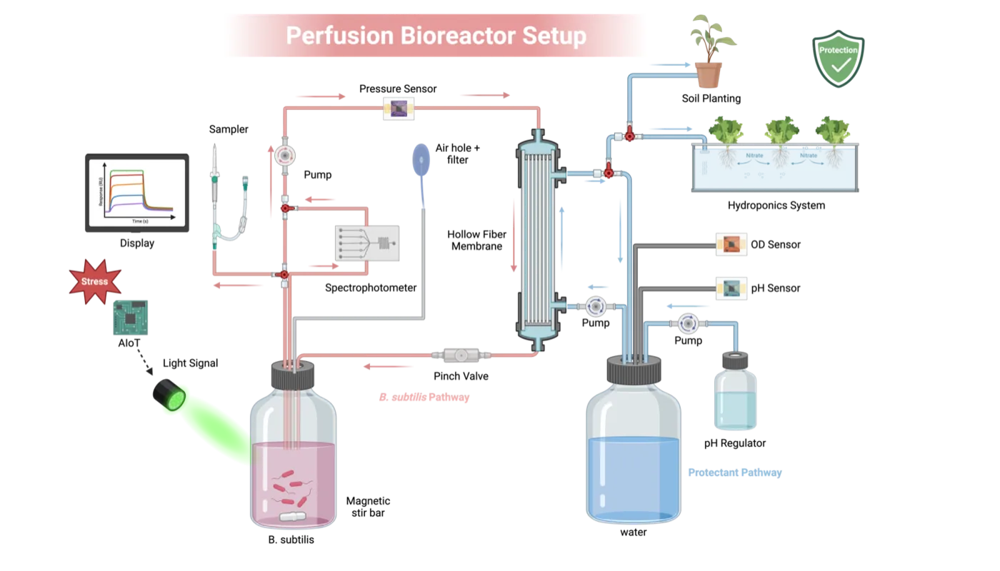
Show details The scale arithmetic, the valve criteria, what each prototype settled, and a documentation failure that changed a process.
| Strategy A, scale up | Strategy B, scale down | |
|---|---|---|
| Module | 63 mm by 300 mm, about 1,300 fibres | 10 mm by 600 mm, 11 fibres |
| Membrane area | 1.3 m² | 0.02 m² |
| Cross-flow at 2,000 s−1 | 16.25 L/min | 129 mL/min |
| Cross-flow at 6,000 s−1 | 48.74 L/min | 388 mL/min |
| Pump available | 1.5 L/min | within reach |
No test was run because none was needed: the arithmetic settles it by a factor of ten to thirty, and we scaled down. The valve went the same way. Four criteria were agreed before any option was scored, so they could not be bent toward the answer: does it hold when power is cut, how much holding force against permeate pressure, can we build it from parts already in the lab, and how much firmware does it need. A stepper releases when it loses power and the loop is full of live engineered culture, so the first criterion outranked the other three and decided it alone. We replaced a valve we had already built with a servo.
| # | Date | What changed | What it settled |
|---|---|---|---|
| III | 4 Jul | Module frozen at the small geometry | Scale settled on arithmetic; specification re-checked against invoices |
| IV | 12 Jul | Pressure transducer on the retentate side, 0 to 1 MPa, read through a divider | Transmembrane pressure on a screen the same evening, with a pump sawtooth on it |
| V | Jul | Servo pinch valve replacing the stepper | Holding on power loss |
| VI | 16 to 20 Jul | Full rig assembled over four days; module characterised on pure water across eight flow settings, twice | The rig ran; the record of building it did not |
| VII | 5 to 23 Aug | Magnetic pump, cooling reservoir, cap bored for dissolved-oxygen and pH probes | One accepted, two rejected; autonomy blocked on sterility |
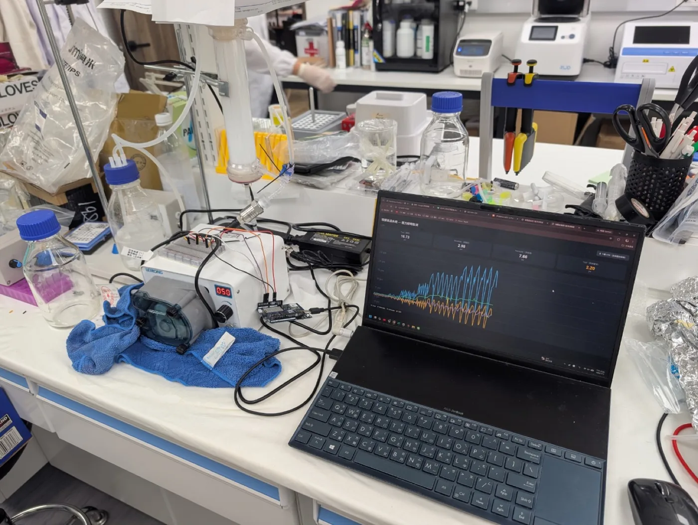
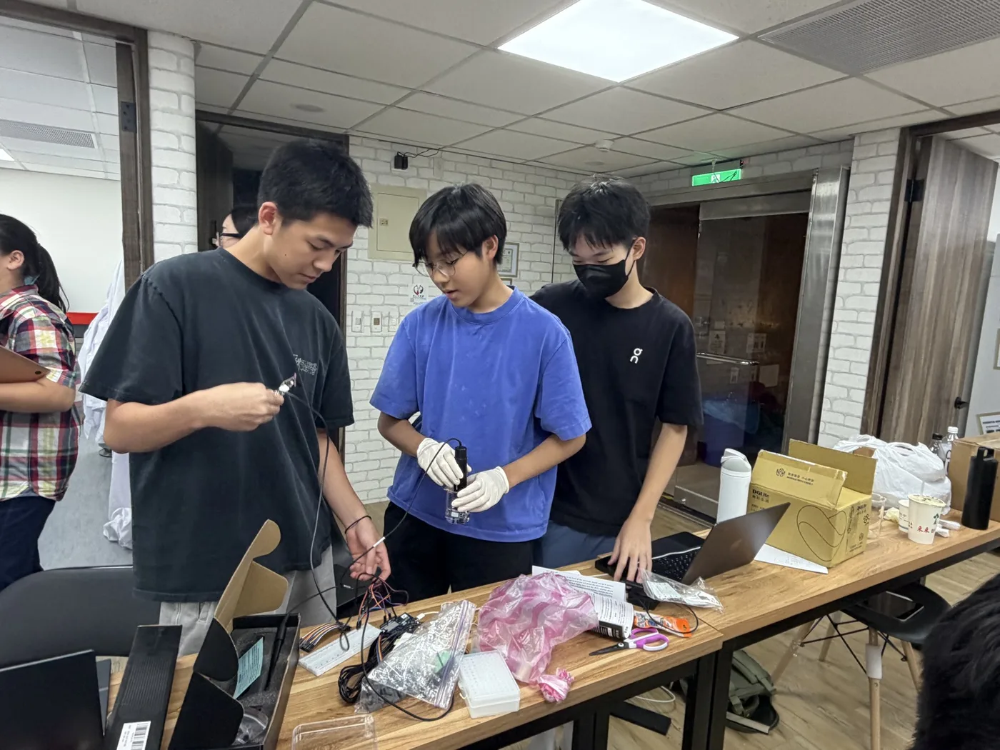

Freezing the specification meant checking every line against invoices instead of against memory, and two of our own recorded claims did not survive. The old specification said the membrane had a 50 kDa molecular weight cut-off and blocked outer-membrane vesicles. The module we actually own is 0.2 µm microfiltration, which passes small vesicles and cell debris along with the roughly 36 kDa ACC deaminase that is meant to pass. The barrier is cellular, not molecular, and we withdrew both claims in writing.
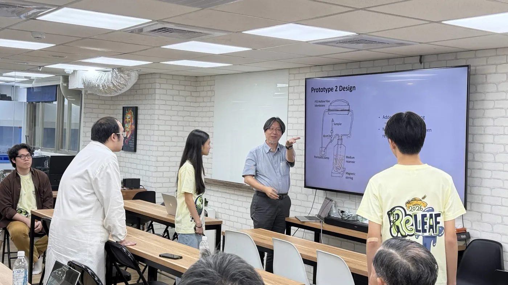
One failure here is a documentation failure and it changed a process. Prototype VI was photographed nineteen times across four days, with gaps, duplicates and no captions, and we cannot reconstruct the assembly order from them. A future team rebuilding this rig would get the bill of materials from Hardware and would not get the order things go together in. The next build is photographed against an agreed list.
The transducers this cycle fitted are the ones the next question needs, and that question is still open. The reactor record names four cycles on membrane pressure and flow — the transducer, two rounds of transmembrane pressure against flow, and a magnetic pump test — and none of them has been run. Transmembrane pressure across a multi-day run is the record’s highest-priority open parameter, because a cake of retained cells and debris on the lumen wall is the most likely limit on service life. The feed, retentate and permeate transducers that would measure it are fitted and logging.
Cycle 5 · Bioreactor v1, prototype VIII · 2 to 4 September 2026 Open
Every subsystem switched on at once, on cells, for fifty-three hours
- Result
- OD600 0.1738 to 2.4474 AU across 53 h 22 min and 6,387 logged samples, with transmembrane pressure flat at −0.0005 bar after 1,132 L through the loop.
- Changed next
- Two integration cycles are named and unrun: v2 for valves and control, v3 for light, pH and the operator interface. Before either, extend the photometer calibration above OD 1.2, repeat with a deliberate fouling challenge, and take the probes out of the sterile boundary.
Design
This cycle tests integration, not the optogenetic circuit. ACC deaminase is placed under a constitutive promoter so the strain expresses continuously, which removes light control as a variable. Culture circulates through the lumen side, protectant crosses into the shell side, and cells are retained. Everything else in the loop exists to keep that separation running unattended: a peristaltic pump circulates the culture, a medium reservoir feeds it, the in-line photometer reads OD600 without opening the system, and pressure and flow sensors confirm perfusion holds at the set rate.
Build
The rig went into the 37 °C incubator with the constitutive strain in a 500 mL reservoir, and every subsystem was switched on at the same time and logged to one file, on a 30 s median window so one row of the log covers the same interval on all three signals.
Test
Engineered B. subtilis was run in the system and ACC deaminase was secreted across the membrane.
The blot behind that sentence is in the cloning track, Figure 16: lumen-side cell lysate and medium against shell-side medium, sampled every two hours from 14 to 44 hours, with the ACC deaminase band at about 42 kDa. At that expression level a shell-side band is faint at best.
Learn
ACC deaminase was successfully secreted to the shell side but expression is weak.
The blot says it crosses. It does not say how fast, and no shell-side concentration against time has been measured, so the protectant transfer rate is open, and it may be the thing that sets throughput rather than growth. No medium feed was fitted, either, so what was taken off the shell side was never replaced.
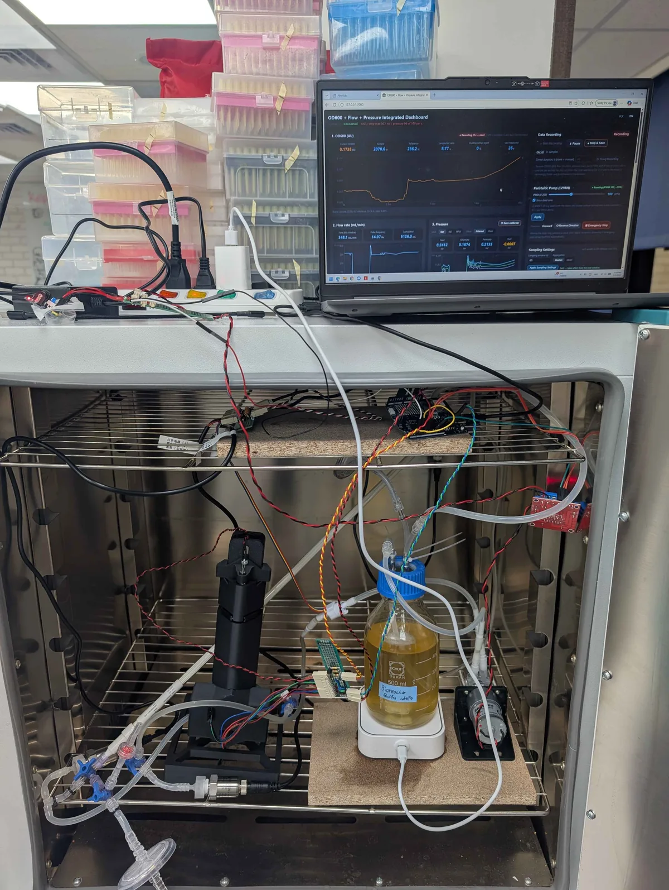
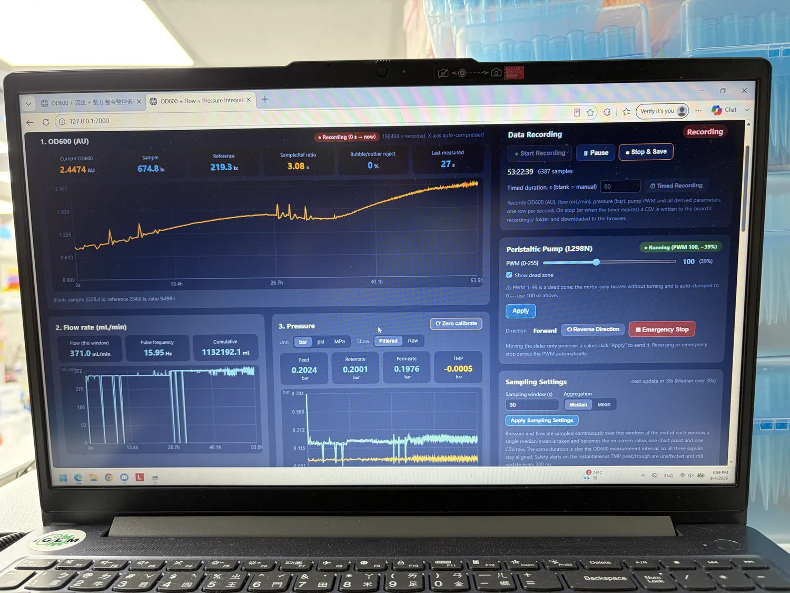
Show details The run read end to end, what the flat pressure does and does not prove, and where the secretion claim stands.
| Reading | At 06:58 | At 53:22:39 |
|---|---|---|
| OD600, in line | 0.1738 AU | 2.4474 AU |
| Sample and reference | 2070.6 and 236.2 lx, 8.77× | 674.8 and 219.3 lx, 3.08× |
| Bubble and outlier rejection | 0 % | 0 % |
| Flow, current window | 348.1 mL/min | 371.0 mL/min |
| Cumulative volume | 5.1 L | 1,132.2 L |
| Feed, retentate, permeate | 0.2412, 0.1874, 0.2133 bar | 0.2024, 0.2001, 0.1976 bar |
| Transmembrane pressure | −0.0007 bar | −0.0005 bar |
| Pump | Peristaltic at the same duty cycle, forward, for the whole run | |
Three rows carry most of the result. Bubble rejection stayed at zero for the whole run, which is the fault the photometer’s first three builds were destroyed by. Transmembrane pressure did not move: three sensors that agree to within 0.005 bar at the start still agree at the end, after 1,132 L. And the pump never changed setting, so the flow difference between the two columns is the loop’s own behaviour and not an operator.
A flat transmembrane pressure across fifty-three hours is the first fouling datum this project has. It is a weaker claim than it sounds: the membrane is 0.2 µm and the loop runs at essentially zero pressure difference across it, so this is a fifty-three-hour absence of fouling under mild conditions, not a fouling model. It rules out the failure mode that would have stopped the run; it does not predict a season in a field. One earlier test stands behind it: on 16 August the module was run on pure water across eight flow settings, twice, once fitted and once replaced by plain tubing, which showed that the valves, fittings and flow cuvette account for 46 to 55 % of the total pressure drop. Not subtracting them would overstate the membrane’s resistance by nearly a factor of two.
Because the shell side exists and can be sampled, this rig is the only apparatus in the project that can be asked whether something crosses a membrane.
In-line photometer
Nobody sells this instrument, so we built it. It reads optical density straight from the flowing culture, with a reference channel split off before the sample so drift in the source divides out. Six cycles, two of them ended by the same class of mistake made twice.
Cycle 1 · Light path · May 2026 Closed
Find where each optical component belongs before anything is printed
- Result
- Three measured spacings that became the fixed geometry of every later build.
- Changed next
- The bench layout became a printed instrument in the loop.
Design
We used magnetic helping hands, the clip tool that holds parts locked in place and is normally used for soldering, to hold our amber 600 nm LED in line with a purchased paralleling lens. That gives parallel light, which a 2 mm slit then narrows, so only a small part of the beam carries on through the beam splitter to the two lux sensors.
Build
We locked the LED, slit, beam splitter and both lux sensors in position relative to each other and left only the paralleling lens free to move. Fixing everything else made the lens position the single variable.
Test
With the other components locked down, we shifted the paralleling lens along the axis until the light path steadily illuminated both sensors. Doing that meant nudging the slit and the sensors slightly as well, to bring the path into line. Then we measured the distance between every component and turned the layout into a drawing our drylab hardware team could develop into a CAD model with everything anchored in place.
Learn
We measured the tip of the LED to the focal lens at 5.5 cm, the lens to the center of the beam splitter at 10 cm, and the center of the beam splitter to each sensor at 2 cm.
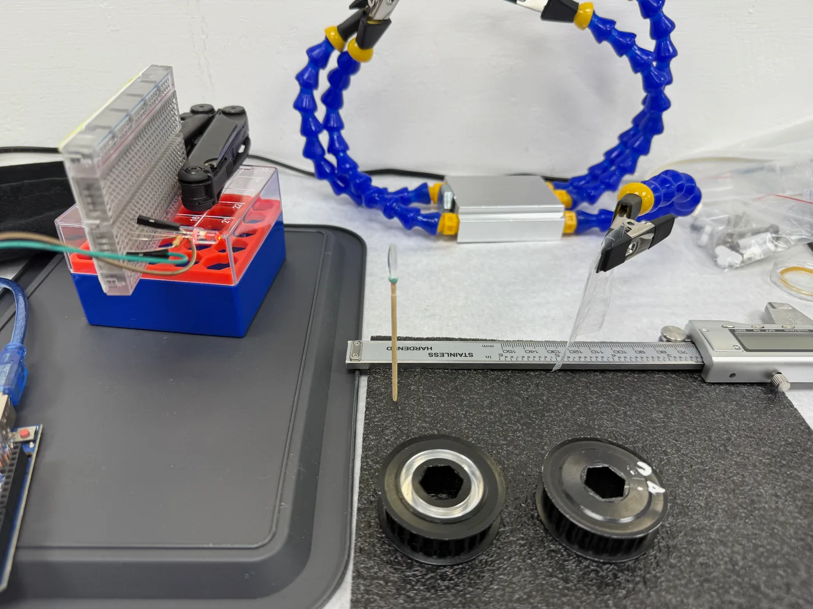
Cycle 2 · V1, horizontal rail Named failure
A horizontal light path gives a bubble nowhere to go
- Result
- Unusable. The readings stepped with bubbles and the baseline drifted under loose mounts.
- Changed next
- Stand the light path up, and tighten the component tolerances.
Design
The light path stays flat and horizontal, since the bench arrangement was already on one plane. And every component stays independently adjustable, because we did not yet trust the cycle 1 spacings to be final.
Build
The whole optical train mounts on a single printed rail. The flow cuvette is plumbed into the recirculating loop with tubing at both ends, so the instrument reads the culture as it passes through.
Test
Data fluctuation was way too drastic due to bubbling within the flow cuvette as well as high tolerance for lenses and beam splitters. The draft marks the run itself: actual data not found.
Learn
Bubbles in the flow cuvette were sitting directly in the beam, and with a horizontal path a bubble had nowhere to go. The independently adjustable mounts were also too loose. Adjustability helped during alignment and hurt everywhere else.
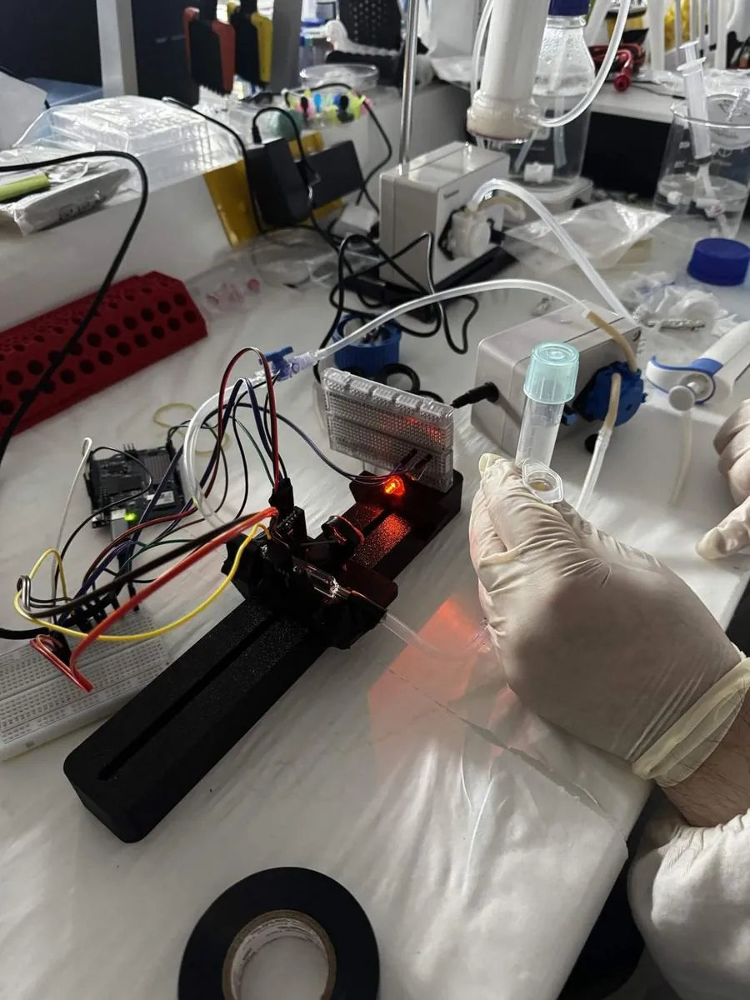
Cycle 3 · V2, vertical Named failure
The optics were not the main problem, the blank was
- Result
- Standing the path up moved the bubbles, and the disagreement with the benchtop instrument turned out to be a procedure, not an optic.
- Changed next
- Blank on distilled water, which is what the reference instrument is calibrated on.
Design
V2 stands the light path up. The LED fires upward through the flow cuvette, so a bubble in the cell rises along the beam axis and leaves the light instead of settling in it. This uses buoyancy to solve the problem rather than relying on flow.
Build
A wide square base plate was printed with a mounting adapter for the rail, so the assembly stands rigidly on the bench with the optical axis vertical. The component seats were tightened so the lens and splitter hold their measured positions.
Test
Two samples were run and compared against the Bio-Drop. The reference channel held at 92.5 lux across both readings. That tells us the source was stable between measurements, so the drop on the sample channel came from the sample and not from the LED.
Learn
We had been blanking Releaf against growth medium. The Bio-Drop is calibrated on distilled water. The roughly 20% disagreement we had been attributing to our optics was largely a procedural artifact.
The reactor record now treats this cycle as the origin of the blank protocol: distilled water, so the baseline matches the instrument we validate against, and every comparison after this one uses it.

Show details The two readings, and the one thing the two hardware records still say differently.
| Sample | Reference | OD | |
|---|---|---|---|
| Medium | 660 lux | 92.5 lux | 0 au |
| 2 mL titanium dioxide | 495 lux | 92.5 lux | 62.5 au |
The titanium dioxide is here because it scatters light the same way from one reading to the next: it does not grow and it does not settle out between measurements the way a culture does.
Cycle 4 · Angled stand · 19 July 2026 Closed
Ten degrees of tilt, and a reference channel that moved when nothing should have moved it
- Result
- The two titanium dioxide concentrations separate cleanly, the difference from the Bio-Drop falls from about 20 % to 8 %, and the reference channel moves 6.4 % between blank and sample.
- Changed next
- Enclose the light path, drive the LED directly, and put real culture through it.
Design
Tilting the whole instrument means no surface inside the cuvette is horizontal, so a bubble has a continuous upward path along the wall and nothing flat to rest against. We put the tilt in a wedge under the body rather than building it into the optics.
Build
The body sits on a printed wedge with structural support underneath so it does not flex under its own weight. A dual luer valve with syringes is fitted to the loop, used to bleed gas out before the instrument is started.
Test
The sample channel dropped from 137.63 lux on the blank to 120.44 lux at 1 mL and 111.62 lux at 2 mL, giving readings of 0.3712 and 0.5785 au. The reference channel sat at 17.23 lux on the blank and 18.33 lux on both samples.
Learn
The reference channel is the bigger finding. It moved 6.4% between the blank and the samples, and the reference beam is split off before the sample, so nothing in the cuvette should be able to change it. A reference channel we cannot trust is a reference channel we cannot correct with.
Either the source drifted or the reference path is picking up light it should not see. Room light is the likeliest version of the second: at this build the path is open to the bench and neither sensor is shielded from it, which is what puts covers on V4.

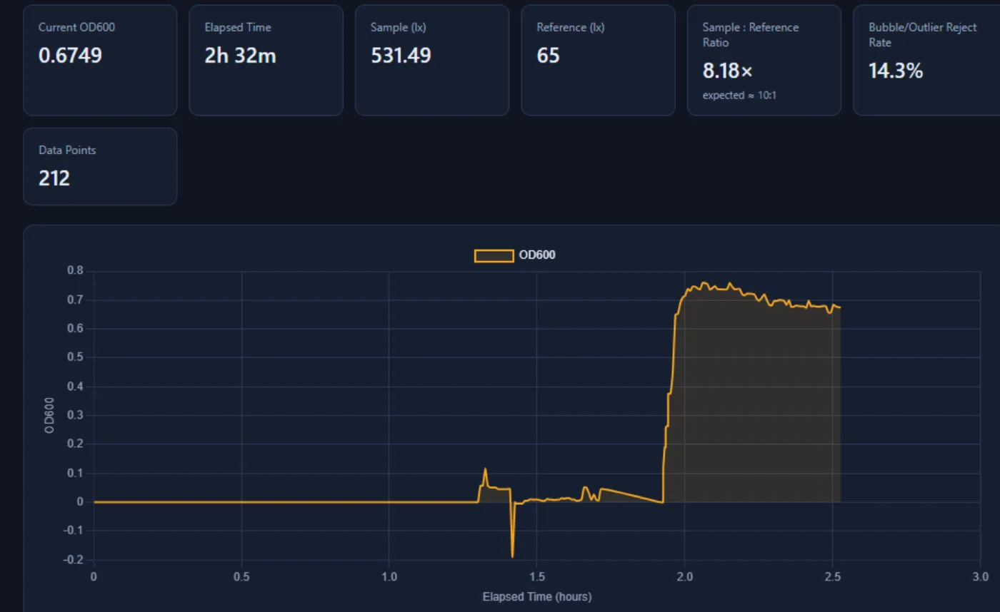
Show details The doubling that was not a doubling, and what static samples cannot tell you.
The instrument responds in the right direction and separates the two concentrations cleanly, so the tilted geometry holds up. Doubling the titanium dioxide only moved the reading by a factor of 1.56, which we cannot yet explain from this data alone.
Everything so far has also been static samples held in the cell. Titanium dioxide tells us the optics work, but it does not move, does not grow, and does not produce bubbles. The instrument has to hold up on culture flowing through the loop over a long run before any of this means anything.
A second blanking error is recorded around the same build: the instrument read about four times high on the reactor because it had been blanked through a cuvette that cannot be cleaned in line. It is the same class of error as cycle 3 and the instrument has no way to detect either, which is a design gap and not an operator gap. What did improve is the diagnosis. The first blanking failure took a rebuild to find; the second took twenty-five minutes, because by then a developer mode could stream both raw channels and rule the optics out.
Cycle 5 · V4 and the 22 °C growth run · 21 July to 8 August 2026 Closed
Positions fixed, path enclosed, and a growth curve nobody had to interrupt
- Result
- An unbroken run past 400 hours on engineered B. subtilis WB800 at 22 °C, with nothing withdrawn from the loop.
- Changed next
- Calibrate the instrument against a reference, on a standard that does not grow.
Design
Component positions are fixed at their default alignment; every mount surface that touches glass is lined with TPU; and snap-in covers run the full length of the light path from LED to sample sensor, so no room light reaches either detector. A photometer that responds to the lights being switched on is not measuring the sample.
Build
The instrument runs on an Arduino UNO Q. Both lux sensors report over the same bus. The interface is a live web dashboard served on the local network, so the run can be watched from any machine without touching the rig.
Test
A continuous run of engineered B. subtilis WB800 at 22 °C, drawn from the bioreactor loop and passed through the flow cell in line, so no sampling event interrupted the culture and no material was removed to measure it. The run passed 400 hours.
Learn
Noise is tight below about 0.4 OD and ragged above about 0.8, so the useful precision is not flat across the range. The rejection rate moved from 42.9% to 14.3% to 0% within one run, and the rejection rule is not yet written down anywhere.
It is written down now. Every reading is a burst of fourteen, the burst’s median is taken as its value, and anything beyond the median plus or minus three times the median absolute deviation is thrown out; above 50 % rejected the dashboard turns the number red and tells the operator to deal with the bubbles. That rule also settles the three rates: 42.9 % and 14.3 % are exactly six and two readings out of fourteen, not a drift over the run.

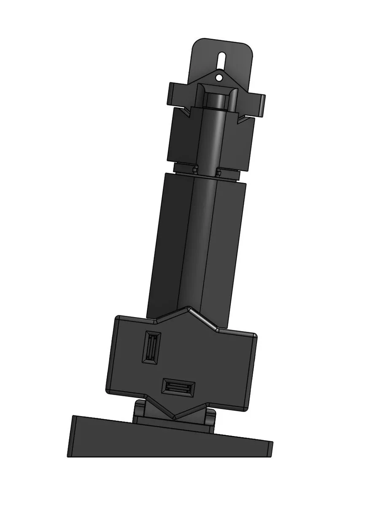
Show details The dashboard snapshots, the fault window, one dip nobody can explain, and three durations in our own records.
Snapshots from the run, all from the same experiment. At 3d 7h 57m the dashboard read 586 points, OD 0.7661, sample 171.67 lx, reference 26.67 lx, ratio 6.44x, reject rate 42.9%. At 6d 20h 58m it read 1097 points, OD 0.7683, ratio 6.43x, reject 14.3%. At 7d 21h 28m it read 1244 points, OD 1.1804, sample 141.85 lx, ratio 5.32x, reject 0%.
Between roughly 240 and 300 hours the scatter grew by an order of magnitude, and over the same hours the reference channel fell from 25.8 lux to 9.3, bottoming at 1.4. The first hypothesis was contamination and it was wrong: the recirculation pump had failed, and swapping it knocked the optical axis. Part of that window is the reactor failing and part of it is us, and the reason we can tell the difference is that the instrument’s own reference channel flagged the window as untrustworthy while it was happening. We would rather put it that way than the way we first wrote it, which was that the photometer detected the pump dying: nobody was rostered to look at the trace daily, and the fault was noticed late.
A separate, earlier feature, a fall from OD 0.93 to 0.72 between 120 and 160 hours, has no attribution at all. The optical channel was healthy through it, so it is not the instrument. Lysis followed by cryptic growth, sporulation and germination, and biofilm sloughing all remain open. The measurement that would have separated fouling from biology is a flush and reblank at the end of the run; it was never done, and once the rig was torn down the chance was gone.
The thing the draft asked for and did not have was the calculation itself: whether the reported OD used the reference channel or only the sample against the blank. The photometer record states it, and it uses both. A blank fixes K, the sample reading divided by the reference reading with medium and no cells in the cell; every live reading is then OD600 = −log10[S / (K · R)], so drift in the LED divides out over a multi-week run. The dashboard of this run reported five times that value, and with the factor restored all three snapshots above reproduce on one K of about 9.16.
The ratio flag is still unexplained. The beam splitter is specified 90:10, which is where the dashboard’s expected 10:1 comes from, and the run measured 5.3× to 6.4× throughout. Either the split is not what it says or the expectation is set wrong, and until that is settled the red flag on the figure above is not a reading about the culture.
Cycle 6 · Calibration with titanium dioxide · 23 August 2026 Closed
We expected to need a calibration transform, and the data said not to apply one
- Result
- Raw output agrees with the benchtop instrument to a median paired difference of 3.8 %, and both track the mass standard at R² above 0.999.
- Changed next
- Repeat on cells, extend the range, and confirm against the iGEM silicon dioxide standard.
Design
Using culture to calibrate would lead to issues in growth time, settling, or cell lysis, leading us to come up with TiO2 suspension as a stable scattering target. The iGEM standard is done with SiO2, but TiO2 performed nearly exactly the same suspended in 1% SDS solution and was much cheaper.
Build
The calibration loop consisted of a magnetic stirrer, a peristaltic pump, our photometer, and a 500 mL reservoir, whose cap had holes for the inlet, the outlet, a sampling port, and an air hole that prevented a vacuum forming during sampling.
Test
Plotted against mass added, both instruments track the standard at R² > 0.999 (Releaf 0.9999, Bio-Drop 0.9998), and plotted against each other the raw points fall along the line of identity, agreeing to a median paired difference of 3.8%.
Learn
We originally expected the Releaf readings would need a calibration transform; instead the two runs showed that no calibration is needed. Fitting our readings to the Bio-Drop would tie them to the reference instrument’s own measurement error. A calibration step, in other words, could make the readings worse rather than better.
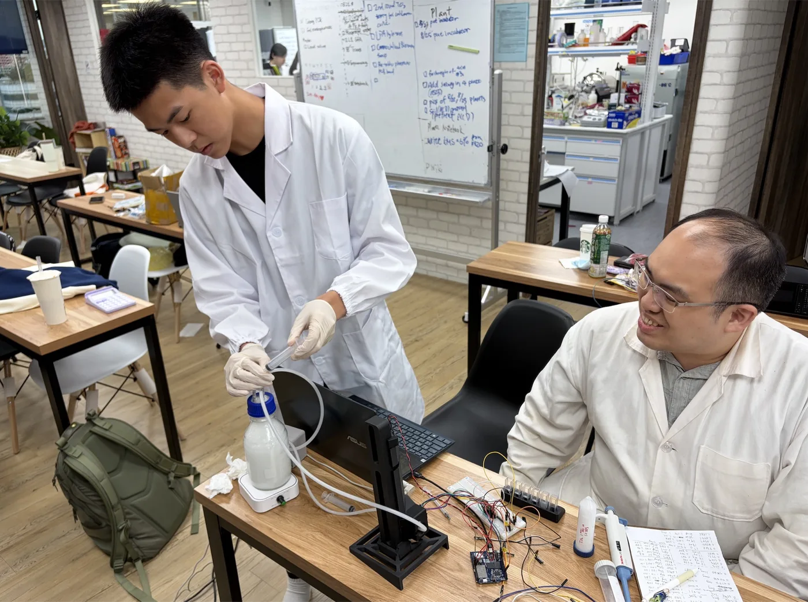
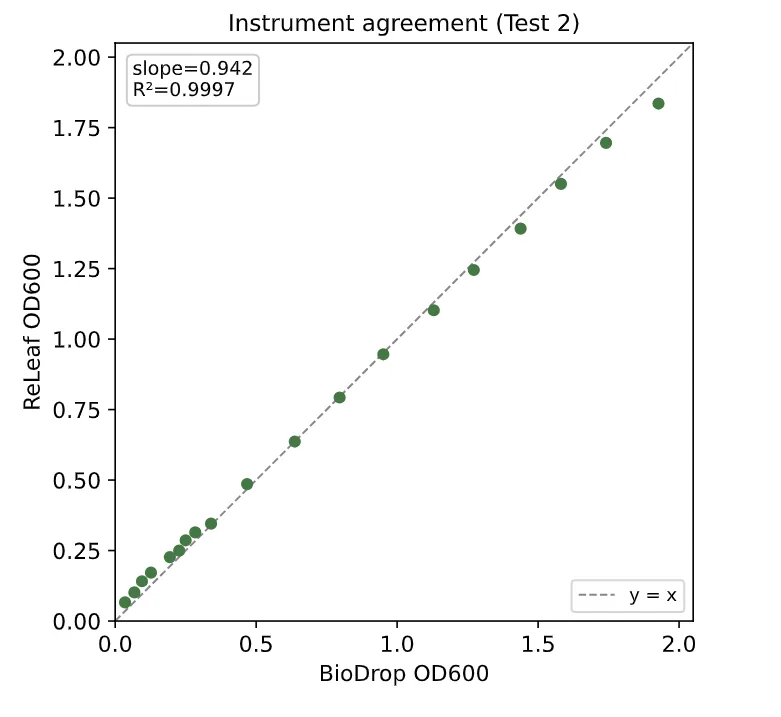
Show details Two exclusions made on objective grounds, what the two runs each probed, and one accuracy claim that still has to be reconciled.
Two single-point exclusions were applied, each on objective grounds, and both are shown as open markers in the figures rather than deleted. In Test 1, the mg = 37 Bio-Drop reading is a handling error, off the trend of its neighbors. In Test 2, the mg = 5 Bio-Drop reading violates monotonicity, it exceeds the readings both above and below it, which is impossible for an increasing standard. In both cases, the paired Releaf reading is on trend.
The raw, uncalibrated Releaf output already sits near one-to-one with the reference and tracks the ground-truth mass standard with a residual scatter comparable to the Bio-Drop’s: in Test 1, across 2 to 40 mg, 0.030 OD600 for Releaf against 0.031 for the Bio-Drop. A line fit through the raw Test 2 points scatters by an RMSE of 0.011 OD600 about the line of identity, which measures how tight the raw agreement is and is not a correction applied to anything. The SiO2 calibration we deferred remains available as a future check, but on the strength of the TiO2 comparison it is a confirmation step, not a dependency.
Cycles 7 and 8 are named on the reactor record and neither has been run. Cycle 7 is the silicon dioxide calibration, deferred above. Cycle 8 is a simplified photometer, and the reasoning behind it is now written out: three parts carry most of the cost, the flow cuvette earns its price because it is what lets the instrument read the loop live and the beam splitter is what keeps a long run honest, which leaves the paralleling lens as the part to remove. Shaping the LED’s own output instead — a sanded flat cap, or a different LED — is expected to make the instrument two thirds smaller and $70 cheaper, against about $150 for the build the long run was made on and $15,000 for the Bio-Drop it was checked against. All of that is expectation. One draft reports the simplified build accurate, another reports it untested, no comparison numbers exist, and the older assembly is the one kept as final.
Light plate apparatus
DiOPAL is a testing apparatus, not part of the control loop. It exists to answer one question: how the wavelength and intensity of applied light affect protectant production in engineered B. subtilis. Three cycles took it from two LEDs on a breadboard to an enclosed instrument with software-set intensity tiers, and the overnight run that was meant to prove the third one broke it.
Cycle 1 · Dual-wavelength array Closed
Put a green and a red LED in every column and see whether the idea works at all
- Result
- The concept holds. Nothing about it is quantitative: output was uncontrolled and external light was not blocked.
- Changed next
- Measure every LED, sort them into matched groups, and shield the cultures.
Design
Put a green and a red LED in each column so we can switch between them quickly and exercise the on and off control of protectant production directly. Nothing is calibrated at this stage, because the question is whether the concept works at all before we spend effort making it precise.
Build
Dual LED per column, allowing for quick adjustment from Green to Red light output. Wire management prints, included from the start, since even at this size the harness gets unmanageable fast. The array was driven straight from a breadboard.
Learn
Output consistency between LEDs was not controlled. External light was not blocked.
Internal-resistance variance is a common problem in cheap single-bulb LEDs: nominally identical parts draw different currents and emit different intensities at the same drive level. As long as that is true, an intensity tier is not a real quantity, and the wavelength comparison is not fair either, since the green and red channels would be running at unknown relative brightness. Ambient light adds an unknown amount of illumination to every tube, and it lands hardest on the low-intensity condition, which is exactly where the separation has to be cleanest.
Cycle 2 · Matched output and light shielding Closed
Twenty LEDs sold as identical spread by a quarter, so the intensity tiers had to come from software
- Result
- Green ran from 2.01 to 2.54 kLux and red from 360 to 438 lux, spreads of 26 % and 22 %. Sorted into fours, each group holds to about 1 to 2 %.
- Changed next
- Set the tiers by pulse-width modulation, and enclose the electronics.
Design
The approach is to measure the light output of every LED individually and use that to identify units with similar internal resistance. From the matched units we form three groups of four per wavelength, one group per intensity tier, arranged as columns. Because the LEDs within a column are matched, the column can be recalibrated as a unit through straightforward mathematical adjustment, so that every column at a given tier matches every other: that is what turns low, medium and high from labels into reproducible quantities. Coverage was added to block external light, so that the intensity a culture receives is the intensity we set.
Build
Every LED was driven at 5 V and measured individually on a lux meter using a printed sensor fixture, so each reading is taken at the same distance and orientation. Each LED carries a tag made of its row and its column, rows A to D running downward and columns 1 to 5 across, so any physical LED can be traced back to its own measurement. The array was then rewired with the matched units grouped into columns.
Test
All twenty green LEDs were read in kLux and all twenty red in lux, at 5 V, one at a time, and the grids are in the details below, laid out by measurement tag and not by the array’s own 4 × 6 grid. Sorting those into groups of four by output gives the matched sets the tiers are built from, and the six channels were read again after rewiring.
Learn
Sorting by measured output tightens each group considerably: the green low group holds 2.33 to 2.34 and the green mid group 2.35 to 2.37, well inside 1%, and the red groups hold to about 2% each. But the separation between tiers is smaller than we need. Green low to green high is about 4% and red low to red high about 10%. Those gaps are the parts’ own spread after sorting; they are not three distinct light levels. The tiers therefore have to come from the PWM duty cycle rather than from LED selection: matching makes the four LEDs in a column agree with each other, and software sets how bright that column runs.
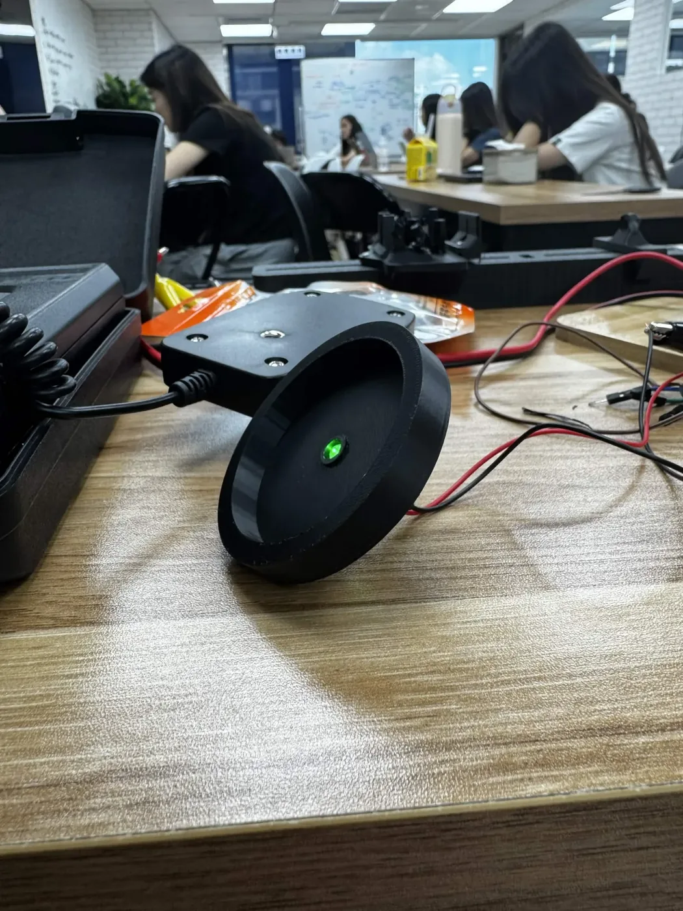
Show details The full measurement grids, and the group that would not tighten.
| 1 | 2 | 3 | 4 | 5 | |
|---|---|---|---|---|---|
| A | 2.54 | 2.19 | 2.33 | 2.40 | 2.40 |
| B | 2.37 | 2.11 | 2.34 | 2.48 | 2.33 |
| C | 2.01 | 2.37 | 2.38 | 2.42 | 2.36 |
| D | 2.33 | 2.05 | 2.35 | 2.45 | 2.20 |
| 1 | 2 | 3 | 4 | 5 | |
|---|---|---|---|---|---|
| A | 431 | 371 | 424 | 393 | 438 |
| B | 400 | 380 | 430 | 397 | 360 |
| C | 410 | 410 | 360 | 416 | 397 |
| D | 411 | 390 | 360 | 388 | 428 |
| Green low | Red low | Green mid | Red mid | Green high | Red high |
|---|---|---|---|---|---|
| 2.33 | 0.390 | 2.35 | 0.410 | 2.38 | 0.424 |
| 2.33 | 0.393 | 2.36 | 0.410 | 2.40 | 0.428 |
| 2.33 | 0.397 | 2.37 | 0.411 | 2.40 | 0.430 |
| 2.34 | 0.397 | 2.37 | 0.416 | 2.42 | 0.431 |
The green high group spans 2.38 to 2.42, about 1.7%, against 0.4% and 0.9% for the other two green groups. It is the leftover group, made of what did not match anything else.
What remained after this cycle was also practical. The electronics were still exposed, intensity was still set by hand, and there was no dedicated way to hold the test tubes in a repeatable position over the array.
Cycle 3 · Enclosed and software-controlled Open
Twenty-four cultures under six defined conditions, and then a night on a shaker took the base apart
- Result
- An instrument that can be handed to someone else: enclosed electronics, code-set intensity, and a holder that fixes the distance between LED and culture. The overnight run on a shaker snapped a post off the bottom plate, pulled wires loose, and leaked light between the wells.
- Changed next
- Repeat that overnight run on the repaired base, measure photon flux rather than lux, check uniformity between wells, and run the circuit under it.
Design
An outer frame print houses the LED wiring and the perf board, so no electronics sit loose on the bench. Light intensity is varied in code, so a run is defined by a set of values rather than by a physical adjustment someone has to remember. Slider prints allow assembly and disassembly without tools. A tall print holds the test tubes at a fixed position over the array, so the distance between LED and culture is the same every run.
Build
Control runs from an Arduino Uno R4 WiFi. PWM signals from the Arduino drive three MOSFETs, one per intensity tier, and software sets the duty cycle for each tier. The selected intensities are held constant for the duration of a test, so each culture receives a fixed, well-defined dose; three calibrated tiers across two wavelengths give six defined light conditions per run.
The switching stage moved with the build. In cycle 2 the three MOSFETs stood on a breadboard on the bench beside the LED holder; here they sit on the perf board underneath it, with the housing over them.
Test
During our overnight test run, the connection point on the bottom plate broke off. The LPA was on a shaker for the run; the frequency was most likely too high for the printed post. Several wires came undone and had to be resoldered. The white tube holder print also allowed light to leak into neighbouring holes, which compromised our data, as the test tubes were receiving light from more than one source.
Learn
All four screws on the bottom plate are now used, not two, which spreads the load across four points instead of concentrating it on a pair, and every soldered connection was reinforced. Neither change has been through a second overnight run on the shaker, so the repair is untested. The white tube holder was replaced with a black one, and its wall thickness increased from two loops to four.
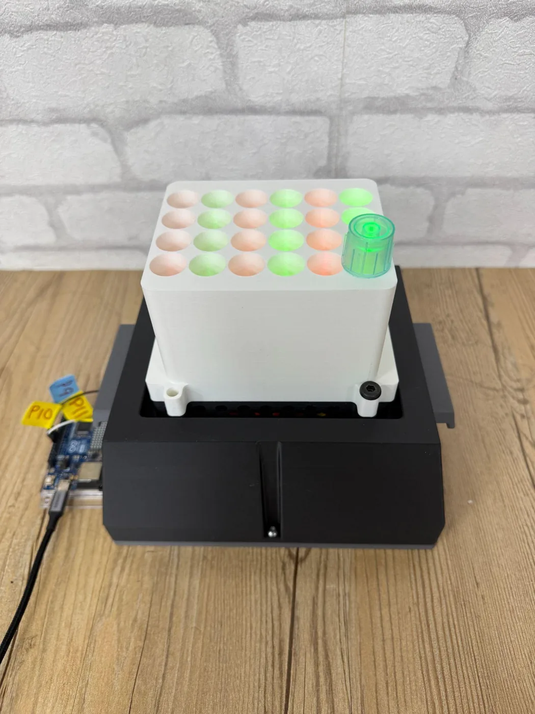
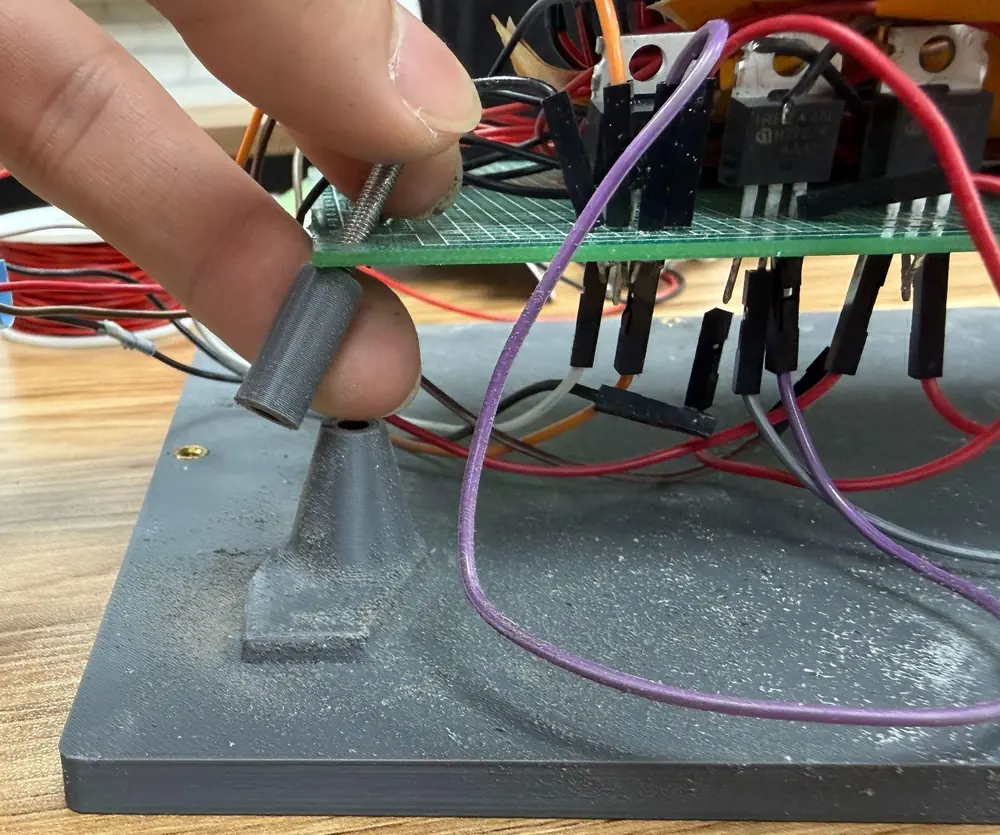
Show details What the team now counts as success, the unit the readings are in, and what this apparatus cannot do by design.
This changed our definition of what it means for DiOPAL to be functional. Having 24 LEDs turn on and produce different readings is not enough. We need to establish the actual photon flux at each condition, verify illumination uniformity between wells, and determine whether the selected conditions actually produce the expected changes in protectant expression.
The last of those is the induction run the whole page waits on. The apparatus is ready for it and the Level 2 strain exists. Earlier faults in the same build are recorded and fixed: one green and red column stopped answering its MOSFET and two ran very weak until the MOSFET was changed, the assembly and disassembly is slow, and the jumper wire on the MOSFET spike sits loose.
Every reading on this track is in lux, which is weighted for human vision and peaks near 555 nm, so the weighting error is not the same size on the green channel as on the red. The dose that matters to the cells is photon flux, in µmol m−2 s−1. The team found this in week 16; until the readings are converted they compare our LEDs with each other and cannot be compared with a published dose.
Hydroponics box
A printed plate that floats on the medium, so thirteen Arabidopsis seedlings stay at the same depth no matter how much liquid is left. Three cycles, each one removing a thing somebody had to do by hand.
Cycle 1 · Fixed plate · April 2026 Named failure
A fixed plate holds the roots at a depth that the plants themselves destroy
Every hydroponic run in the project starts with the same question: where are the roots in the liquid? A fixed plate answers it once, on the day the run is set up, and then the answer drifts for a fortnight.
- Result
- Three plates cut, taped and drilled at 300 mL, 1.5 L and 2 L. The level had to be set by hand before every run, and topped up during it.
- Changed next
- Put the flotation inside the plate, so the plate falls with the level instead of being set against it.
Design
Labs that grow Arabidopsis in liquid medium improvise the setup: a piece of foam cut to size, a mesh taped over a container, or a fixed plate sitting above a reservoir. We did the same, and sized a plate for each of the three box volumes we had on the bench.
Build
Three plates, cut to the box, taped, and drilled on a grid of seed positions. Seed holders dropped into the holes; the medium sat underneath at a level set by eye before the run.
Test
The level turned out to be a narrow window. It has to sit just under the growing platform and as high as it can be got: too low and the roots lose contact, too high and the platform floods. And it does not stay where it is put. The plants drink and the medium evaporates, so a level that was right at the start of a run is wrong by the end of it.
Learn
Somebody has to watch the reservoir and top it up, and every top-up is a chance for conditions to drift between replicates. That is the variable the plate was supposed to remove, and the fixed plate reintroduces it once a day. The fix is not a better level: it is to stop setting a level at all.
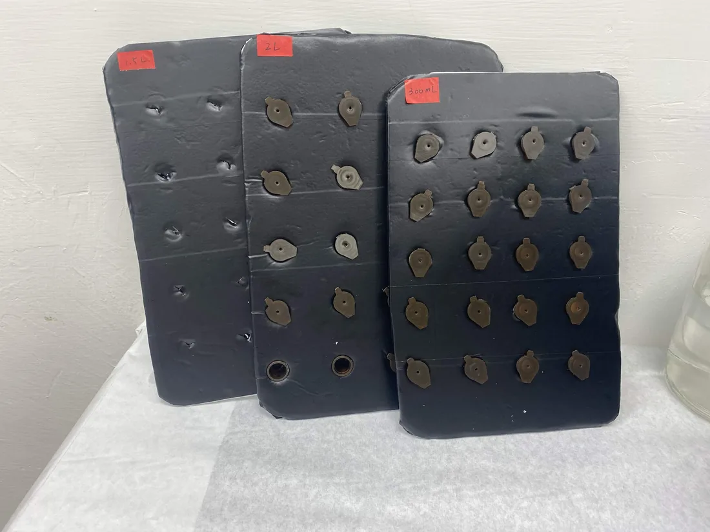
Cycle 2 · First floating version · from 25 June 2026 Closed
Sealed air inside the frame, and four corner poles to trim what the arithmetic got wrong
If the plate floats, the roots stay at the same depth however much liquid is left, and nobody has to top anything up. The question that replaces the level is the freeboard: how high the plate rides.
- Result
- A printed plate that floats on its own frame. The freeboard came out adjustable by washers rather than right by calculation.
- Changed next
- Run the displacement calculation again on every design change until the poles are not doing anything.
Design
Move the flotation into the frame: sealed air chambers that are part of the structure, with nothing to glue on and nothing to come loose in the medium. Sizing them is a displacement problem. The plate has to displace its own mass, plus the seedlings, plus whatever water the printed part takes on, while sitting at the freeboard that puts the roots in the medium and the crowns above it.
Build
Printed in PLA on a standard FDM machine, pontoons hollow at 15 % gyroid infill with a teardrop cross-section that prints without support. A pole at each corner took washers, so the freeboard could be trimmed after printing rather than by reprinting the whole part.
Test
It floats, and the corner poles get used. One worked case from the drafts has the plate at roughly 180 g, where the pontoons came up short by about 10.7 cm³ of volume each. The printed plate was never weighed, so the case cannot be checked against the part that exists.
Learn
The poles are the safety margin on a calculation we did not trust yet. They are also four parts, four washers and a decision per run. Every change to wall thickness or footprint moves the mass and the displacement at the same time, so the calculation has to be rerun on every design change rather than once at the start.


Cycle 3 · Current version · July to August 2026 Open
The ballast poles came off, and thirteen seedlings ran four boxes for eleven days
The last change to the plate is a subtraction. Tuning the sealed volume closely enough makes the corner poles redundant, which removes four parts, four washer stacks and one judgement call per run.
- Result
- Sixteen printed parts, 42.3 cm³ of sealed air, 3.5 g of added load per millimetre of draft, and four boxes run side by side from 25 July to 4 August.
- Changed next
- Weigh an assembled plate and read its freeboard off the load line, which is the one measurement that would close this track.
Design
Smaller footprint, clip-in handles so the plate lifts out of the reservoir without anyone touching the seedlings, and thirteen seed positions in rows of four, five and four. The buoyancy is computed from the STLs rather than estimated: the two chambers hold 42.27 cm³ of sealed air, and down the pontoons’ straight sides the hull gains 3.51 cm³ per millimetre of draft.
Build
Sixteen parts in PLA, no supports, no adhesives and no fasteners. As drawn, the waterline sits 6.0 mm under the slab, a freeboard of 9.2 mm, where the assembled plate displaces 54.2 cm³.
Test
The plate carried the hydroponic assay: four boxes, control, pre-treatment, co-treatment and post-treatment, photographed from above on 25 July, 28 July and 4 August. By the last date the co-treatment box carries the largest and greenest rosettes and the post-treatment box the palest. No run on this plate has had its freeboard measured.
Learn
Every 3.5 g added sinks it about 1 mm, so the sensitivity is known and the load line is drawn; what is missing is one weighing. Printed solid, an upper bound, the sixteen parts come to 92.6 g and would float with 1.9 mm of freeboard, which is the number that retires the 180 g worked case still in the drafts.

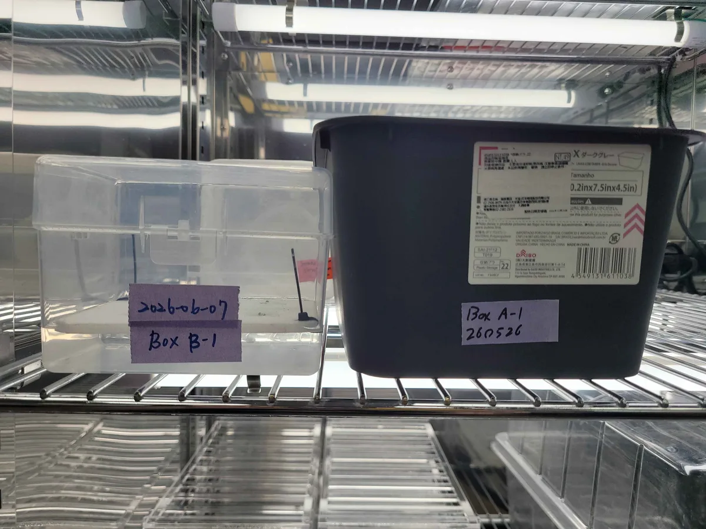
References
- Castillo-Hair, S. M., Baerman, E. A., Fujita, M., Igoshin, O. A., & Tabor, J. J. (2019). Optogenetic control of Bacillus subtilis gene expression. Nature Communications, 10(1), 3099. https://doi.org/10.1038/s41467-019-10906-6
- Haller, D. J., Castillo-Hair, S. M., & Tabor, J. J. (2025). Optogenetic control of B. subtilis gene expression using the CcaSR system. Methods in Molecular Biology, 2840, 1 to 17. https://doi.org/10.1007/978-1-0716-4047-0_1
- Weber, E., Engler, C., Gruetzner, R., Werner, S., & Marillonnet, S. (2011). A modular cloning system for standardized assembly of multigene constructs. PLoS ONE, 6(2), e16765. https://doi.org/10.1371/journal.pone.0016765
- Caro-Astorga, J., Rogan, M., Malcı, K., Ming, H., Debenedictis, E., James, P., & Ellis, T. (2025). SubtiToolKit: A bioengineering kit for Bacillus subtilis and Gram-positive bacteria. Trends in Biotechnology, 43(6), 1446 to 1469. https://doi.org/10.1016/j.tibtech.2025.02.004
- Promega Corporation. (2021). pGEM-T and pGEM-T Easy vector systems (Technical Manual TM042, rev. 10/21). promega.com/…/pgem-t-and-pgem-t-easy-vector-systems-protocol.pdf